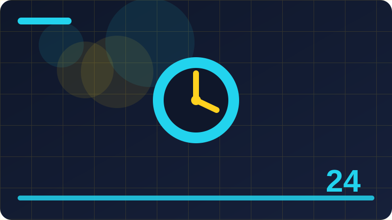

Chapter 24: Timers, Delays and Scheduling

Section 1: What a Timer Does
This section focuses on what a timer does. At first it may look like a small detail, but small details are what make a page feel alive and helpful instead of frozen and confusing. When you understand this idea well, you will spot it in other people's code and you will know exactly where to start when you need it in your own project. Read the explanation carefully, study the example line by line, and then change one value to see what happens. Learning by doing is far stronger than learning by memorising.
Think of what a timer does as a conversation between your code and the page. Your code asks a question or gives an instruction, and the page responds with a value, a change, or an event. That conversation follows rules, and those rules are the same every time, which is good news for a learner. Once you learn the pattern for one case, you can reuse it in many other cases with only small changes. Notice the pattern in the example below, not just the exact words, because the pattern is what you will reuse.
Look now at the code example in this section. Read it from top to bottom, and for each line ask yourself what it does and why it is there. The first lines set up the values or elements you need. The middle lines do the main work for what a timer does. The last lines show the result, usually with console log, so you can see the outcome in your browser console. Try running the code exactly as written first, so you know the starting point works. Then change one small thing, such as a message, a number, or a name, and run it again. Watching that one change alter the result teaches you more than reading ten extra pages.
Watch out for two traps when you practise what a timer does. The first trap is copying code without understanding it, which feels fast but leaves you stuck when you need to adapt it. The second trap is changing many things at once when something fails, which makes it impossible to know which change fixed or broke it. Change one thing, test it, and only then change the next thing. Keep your test examples small and your variable names clear. Clear names act like labels, and labels make debugging far less stressful, especially when you return to code you wrote yesterday.
Your practice task for this section is simple and short. Run the example, change one value, and observe the result. Then write a second, slightly different example that uses the same idea for a different purpose. Keep both examples in a practice file with a comment at the top saying what each one demonstrates. Over time that file becomes a library of patterns you trust, because you built and tested each one yourself. That library will help you far more than a long list of notes you never ran, especially when you start a real project.
setTimeout(function () {
console.log("This runs after two seconds");
}, 2000);Check: How would you explain what a timer does in your own words, and what small example would you run to prove that your explanation is correct?
Section 2: setTimeout Basics
Here you will explore settimeout basics in plain language. The goal is not to impress you with jargon, but to give you a clear mental picture you can carry into your next project. Think of this section as one building block. On its own it is simple, and combined with the blocks around it, it lets you build features that feel professional. Work through the example slowly, ask what each line is for, and test your understanding with the check question at the end.
The core idea behind settimeout basics is that JavaScript gives you a simple, repeatable way to describe what should happen, and the browser then carries out that instruction in order. You do not need to understand every internal detail of the browser to use it well. You need to know what goes in, what comes out, and what changes as a result. When you can explain those three things in one or two sentences, you have understood the idea well enough to use it. If you cannot, read the example again and trace each step on paper before you move on, because guessing at this stage usually creates confusion later.
The example below is deliberately short. Short examples are easier to test, easier to break safely, and easier to fix. Start by copying it into your browser console or a small test page and running it unchanged. Check that the output matches what you expected. Then experiment in small steps. Rename a variable to something clearer and see that the code still works. Change a value and predict the new output before you run it. If your prediction is wrong, that is useful information, not failure. It shows you exactly which part of the idea needs another look.
Beginners often struggle with settimeout basics not because it is hard, but because they try to learn too much at once. If this section feels heavy, split your practice into two short sessions. In the first session, just read and run the example. In the second session, try to write a similar example from memory, using the original only when you get stuck. Also remember that error messages are help, not punishment. They point to a line number and a reason, and reading them carefully usually leads you straight to the fix.
For practice, build a tiny variation of this section's example in your own words. Use your own messages, your own names, and your own numbers, so the result feels like yours. Then add one extra step that was not in the original, such as logging a second value, checking a condition, or repeating the action twice. If it works, write a one-sentence note explaining why it works. If it does not work, note the error and what you changed to fix it. That short note becomes a personal reference you can reuse, and it proves you understood settimeout basics, not just copied it.
let count = 0;
const timerId = setInterval(function () {
count += 1;
console.log("Tick:", count);
if (count >= 5) {
clearInterval(timerId);
}
}, 1000);Check: How would you explain settimeout basics in your own words, and what small example would you run to prove that your explanation is correct?
Section 3: Running Code After a Delay
In this section you will learn about running code after a delay. This is a practical skill you will use again and again when you build real pages, because most JavaScript work is about reading what is on the page, responding to the user, and changing something in a clear and predictable way. Do not rush past the idea. Take a moment to say it in your own words first, then look at the example, then try a small change yourself. That slow loop of reading, predicting, and testing is how beginners turn a new term into a tool they can actually use.
To understand running code after a delay, break it into three questions. First, what are you working with, and where does it come from. Second, what action do you want to perform on it. Third, how will you know that it worked. Answering those questions before you write code saves time and prevents many common errors. Beginners often jump straight to typing, then wonder why nothing changes. A short pause to plan, even thirty seconds, makes the code easier to write, easier to read, and much easier to fix when something goes wrong.
Study the code example as if you were explaining it to a friend. The opening lines prepare everything the example needs, the central lines carry out running code after a delay, and the closing lines make the result visible. If any line is unclear, isolate it. Run just that part, or add a console log before and after it, so you can see what changed. This habit of isolating one line at a time will help you for your whole programming life. It turns a mysterious error into a small, answerable question about one specific step.
A common mistake with running code after a delay is to assume it worked without checking. Always verify the result, either in the console, on the page, or with a simple log message. Another common mistake is to use a name that does not exist, or to run code before the thing it needs is ready. If you see an error about something being null or undefined, it usually means your code looked for something that was not there yet, or was spelled differently. Read the error message slowly, check the spelling, and check the order of your code. Most beginner errors are spelling, timing, or order errors, not deep mysteries.
Now try it yourself. Start with the example, then rewrite it without looking, changing the details to fit a small idea of your own. Perhaps use a favourite word, a real task from your day, or a tiny feature for a practice page. Test it, fix any errors calmly, and then explain the result out loud as if teaching someone else. Teaching is a powerful test of understanding. If you can explain running code after a delay simply, you know it. If you get stuck while explaining, you have found the exact part to review, which is a useful and honest place to be.
const timeoutId = setTimeout(function () {
console.log("You will not see this");
}, 3000);
clearTimeout(timeoutId);
console.log("Timeout cancelled");Check: How would you explain running code after a delay in your own words, and what small example would you run to prove that your explanation is correct?
Section 4: Cancelling a Timeout
This section focuses on cancelling a timeout. At first it may look like a small detail, but small details are what make a page feel alive and helpful instead of frozen and confusing. When you understand this idea well, you will spot it in other people's code and you will know exactly where to start when you need it in your own project. Read the explanation carefully, study the example line by line, and then change one value to see what happens. Learning by doing is far stronger than learning by memorising.
Think of cancelling a timeout as a conversation between your code and the page. Your code asks a question or gives an instruction, and the page responds with a value, a change, or an event. That conversation follows rules, and those rules are the same every time, which is good news for a learner. Once you learn the pattern for one case, you can reuse it in many other cases with only small changes. Notice the pattern in the example below, not just the exact words, because the pattern is what you will reuse.
Look now at the code example in this section. Read it from top to bottom, and for each line ask yourself what it does and why it is there. The first lines set up the values or elements you need. The middle lines do the main work for cancelling a timeout. The last lines show the result, usually with console log, so you can see the outcome in your browser console. Try running the code exactly as written first, so you know the starting point works. Then change one small thing, such as a message, a number, or a name, and run it again. Watching that one change alter the result teaches you more than reading ten extra pages.
Watch out for two traps when you practise cancelling a timeout. The first trap is copying code without understanding it, which feels fast but leaves you stuck when you need to adapt it. The second trap is changing many things at once when something fails, which makes it impossible to know which change fixed or broke it. Change one thing, test it, and only then change the next thing. Keep your test examples small and your variable names clear. Clear names act like labels, and labels make debugging far less stressful, especially when you return to code you wrote yesterday.
Your practice task for this section is simple and short. Run the example, change one value, and observe the result. Then write a second, slightly different example that uses the same idea for a different purpose. Keep both examples in a practice file with a comment at the top saying what each one demonstrates. Over time that file becomes a library of patterns you trust, because you built and tested each one yourself. That library will help you far more than a long list of notes you never ran, especially when you start a real project.
let secondsLeft = 10;
const countdown = setInterval(function () {
console.log(secondsLeft);
secondsLeft -= 1;
if (secondsLeft < 0) {
clearInterval(countdown);
console.log("Time is up");
}
}, 1000);Check: How would you explain cancelling a timeout in your own words, and what small example would you run to prove that your explanation is correct?
Section 5: setInterval Basics
Here you will explore setinterval basics in plain language. The goal is not to impress you with jargon, but to give you a clear mental picture you can carry into your next project. Think of this section as one building block. On its own it is simple, and combined with the blocks around it, it lets you build features that feel professional. Work through the example slowly, ask what each line is for, and test your understanding with the check question at the end.
The core idea behind setinterval basics is that JavaScript gives you a simple, repeatable way to describe what should happen, and the browser then carries out that instruction in order. You do not need to understand every internal detail of the browser to use it well. You need to know what goes in, what comes out, and what changes as a result. When you can explain those three things in one or two sentences, you have understood the idea well enough to use it. If you cannot, read the example again and trace each step on paper before you move on, because guessing at this stage usually creates confusion later.
The example below is deliberately short. Short examples are easier to test, easier to break safely, and easier to fix. Start by copying it into your browser console or a small test page and running it unchanged. Check that the output matches what you expected. Then experiment in small steps. Rename a variable to something clearer and see that the code still works. Change a value and predict the new output before you run it. If your prediction is wrong, that is useful information, not failure. It shows you exactly which part of the idea needs another look.
Beginners often struggle with setinterval basics not because it is hard, but because they try to learn too much at once. If this section feels heavy, split your practice into two short sessions. In the first session, just read and run the example. In the second session, try to write a similar example from memory, using the original only when you get stuck. Also remember that error messages are help, not punishment. They point to a line number and a reason, and reading them carefully usually leads you straight to the fix.
For practice, build a tiny variation of this section's example in your own words. Use your own messages, your own names, and your own numbers, so the result feels like yours. Then add one extra step that was not in the original, such as logging a second value, checking a condition, or repeating the action twice. If it works, write a one-sentence note explaining why it works. If it does not work, note the error and what you changed to fix it. That short note becomes a personal reference you can reuse, and it proves you understood setinterval basics, not just copied it.
function showLater(message, delay) {
setTimeout(function () {
console.log(message);
}, delay);
}
showLater("Hello after a pause", 1500);Check: How would you explain setinterval basics in your own words, and what small example would you run to prove that your explanation is correct?
Section 6: Running Code Repeatedly
In this section you will learn about running code repeatedly. This is a practical skill you will use again and again when you build real pages, because most JavaScript work is about reading what is on the page, responding to the user, and changing something in a clear and predictable way. Do not rush past the idea. Take a moment to say it in your own words first, then look at the example, then try a small change yourself. That slow loop of reading, predicting, and testing is how beginners turn a new term into a tool they can actually use.
To understand running code repeatedly, break it into three questions. First, what are you working with, and where does it come from. Second, what action do you want to perform on it. Third, how will you know that it worked. Answering those questions before you write code saves time and prevents many common errors. Beginners often jump straight to typing, then wonder why nothing changes. A short pause to plan, even thirty seconds, makes the code easier to write, easier to read, and much easier to fix when something goes wrong.
Study the code example as if you were explaining it to a friend. The opening lines prepare everything the example needs, the central lines carry out running code repeatedly, and the closing lines make the result visible. If any line is unclear, isolate it. Run just that part, or add a console log before and after it, so you can see what changed. This habit of isolating one line at a time will help you for your whole programming life. It turns a mysterious error into a small, answerable question about one specific step.
A common mistake with running code repeatedly is to assume it worked without checking. Always verify the result, either in the console, on the page, or with a simple log message. Another common mistake is to use a name that does not exist, or to run code before the thing it needs is ready. If you see an error about something being null or undefined, it usually means your code looked for something that was not there yet, or was spelled differently. Read the error message slowly, check the spelling, and check the order of your code. Most beginner errors are spelling, timing, or order errors, not deep mysteries.
Now try it yourself. Start with the example, then rewrite it without looking, changing the details to fit a small idea of your own. Perhaps use a favourite word, a real task from your day, or a tiny feature for a practice page. Test it, fix any errors calmly, and then explain the result out loud as if teaching someone else. Teaching is a powerful test of understanding. If you can explain running code repeatedly simply, you know it. If you get stuck while explaining, you have found the exact part to review, which is a useful and honest place to be.
setTimeout(function () {
console.log("This runs after two seconds");
}, 2000);Check: How would you explain running code repeatedly in your own words, and what small example would you run to prove that your explanation is correct?
Section 7: Cancelling an Interval
This section focuses on cancelling an interval. At first it may look like a small detail, but small details are what make a page feel alive and helpful instead of frozen and confusing. When you understand this idea well, you will spot it in other people's code and you will know exactly where to start when you need it in your own project. Read the explanation carefully, study the example line by line, and then change one value to see what happens. Learning by doing is far stronger than learning by memorising.
Think of cancelling an interval as a conversation between your code and the page. Your code asks a question or gives an instruction, and the page responds with a value, a change, or an event. That conversation follows rules, and those rules are the same every time, which is good news for a learner. Once you learn the pattern for one case, you can reuse it in many other cases with only small changes. Notice the pattern in the example below, not just the exact words, because the pattern is what you will reuse.
Look now at the code example in this section. Read it from top to bottom, and for each line ask yourself what it does and why it is there. The first lines set up the values or elements you need. The middle lines do the main work for cancelling an interval. The last lines show the result, usually with console log, so you can see the outcome in your browser console. Try running the code exactly as written first, so you know the starting point works. Then change one small thing, such as a message, a number, or a name, and run it again. Watching that one change alter the result teaches you more than reading ten extra pages.
Watch out for two traps when you practise cancelling an interval. The first trap is copying code without understanding it, which feels fast but leaves you stuck when you need to adapt it. The second trap is changing many things at once when something fails, which makes it impossible to know which change fixed or broke it. Change one thing, test it, and only then change the next thing. Keep your test examples small and your variable names clear. Clear names act like labels, and labels make debugging far less stressful, especially when you return to code you wrote yesterday.
Your practice task for this section is simple and short. Run the example, change one value, and observe the result. Then write a second, slightly different example that uses the same idea for a different purpose. Keep both examples in a practice file with a comment at the top saying what each one demonstrates. Over time that file becomes a library of patterns you trust, because you built and tested each one yourself. That library will help you far more than a long list of notes you never ran, especially when you start a real project.
let count = 0;
const timerId = setInterval(function () {
count += 1;
console.log("Tick:", count);
if (count >= 5) {
clearInterval(timerId);
}
}, 1000);Check: How would you explain cancelling an interval in your own words, and what small example would you run to prove that your explanation is correct?
Section 8: The Difference Between Timeout and Interval
Here you will explore the difference between timeout and interval in plain language. The goal is not to impress you with jargon, but to give you a clear mental picture you can carry into your next project. Think of this section as one building block. On its own it is simple, and combined with the blocks around it, it lets you build features that feel professional. Work through the example slowly, ask what each line is for, and test your understanding with the check question at the end.
The core idea behind the difference between timeout and interval is that JavaScript gives you a simple, repeatable way to describe what should happen, and the browser then carries out that instruction in order. You do not need to understand every internal detail of the browser to use it well. You need to know what goes in, what comes out, and what changes as a result. When you can explain those three things in one or two sentences, you have understood the idea well enough to use it. If you cannot, read the example again and trace each step on paper before you move on, because guessing at this stage usually creates confusion later.
The example below is deliberately short. Short examples are easier to test, easier to break safely, and easier to fix. Start by copying it into your browser console or a small test page and running it unchanged. Check that the output matches what you expected. Then experiment in small steps. Rename a variable to something clearer and see that the code still works. Change a value and predict the new output before you run it. If your prediction is wrong, that is useful information, not failure. It shows you exactly which part of the idea needs another look.
Beginners often struggle with the difference between timeout and interval not because it is hard, but because they try to learn too much at once. If this section feels heavy, split your practice into two short sessions. In the first session, just read and run the example. In the second session, try to write a similar example from memory, using the original only when you get stuck. Also remember that error messages are help, not punishment. They point to a line number and a reason, and reading them carefully usually leads you straight to the fix.
For practice, build a tiny variation of this section's example in your own words. Use your own messages, your own names, and your own numbers, so the result feels like yours. Then add one extra step that was not in the original, such as logging a second value, checking a condition, or repeating the action twice. If it works, write a one-sentence note explaining why it works. If it does not work, note the error and what you changed to fix it. That short note becomes a personal reference you can reuse, and it proves you understood the difference between timeout and interval, not just copied it.
const timeoutId = setTimeout(function () {
console.log("You will not see this");
}, 3000);
clearTimeout(timeoutId);
console.log("Timeout cancelled");Check: How would you explain the difference between timeout and interval in your own words, and what small example would you run to prove that your explanation is correct?
Section 9: Passing Arguments to a Timer Callback
In this section you will learn about passing arguments to a timer callback. This is a practical skill you will use again and again when you build real pages, because most JavaScript work is about reading what is on the page, responding to the user, and changing something in a clear and predictable way. Do not rush past the idea. Take a moment to say it in your own words first, then look at the example, then try a small change yourself. That slow loop of reading, predicting, and testing is how beginners turn a new term into a tool they can actually use.
To understand passing arguments to a timer callback, break it into three questions. First, what are you working with, and where does it come from. Second, what action do you want to perform on it. Third, how will you know that it worked. Answering those questions before you write code saves time and prevents many common errors. Beginners often jump straight to typing, then wonder why nothing changes. A short pause to plan, even thirty seconds, makes the code easier to write, easier to read, and much easier to fix when something goes wrong.
Study the code example as if you were explaining it to a friend. The opening lines prepare everything the example needs, the central lines carry out passing arguments to a timer callback, and the closing lines make the result visible. If any line is unclear, isolate it. Run just that part, or add a console log before and after it, so you can see what changed. This habit of isolating one line at a time will help you for your whole programming life. It turns a mysterious error into a small, answerable question about one specific step.
A common mistake with passing arguments to a timer callback is to assume it worked without checking. Always verify the result, either in the console, on the page, or with a simple log message. Another common mistake is to use a name that does not exist, or to run code before the thing it needs is ready. If you see an error about something being null or undefined, it usually means your code looked for something that was not there yet, or was spelled differently. Read the error message slowly, check the spelling, and check the order of your code. Most beginner errors are spelling, timing, or order errors, not deep mysteries.
Now try it yourself. Start with the example, then rewrite it without looking, changing the details to fit a small idea of your own. Perhaps use a favourite word, a real task from your day, or a tiny feature for a practice page. Test it, fix any errors calmly, and then explain the result out loud as if teaching someone else. Teaching is a powerful test of understanding. If you can explain passing arguments to a timer callback simply, you know it. If you get stuck while explaining, you have found the exact part to review, which is a useful and honest place to be.
let secondsLeft = 10;
const countdown = setInterval(function () {
console.log(secondsLeft);
secondsLeft -= 1;
if (secondsLeft < 0) {
clearInterval(countdown);
console.log("Time is up");
}
}, 1000);Check: How would you explain passing arguments to a timer callback in your own words, and what small example would you run to prove that your explanation is correct?
Section 10: Timers and the Event Loop
This section focuses on timers and the event loop. At first it may look like a small detail, but small details are what make a page feel alive and helpful instead of frozen and confusing. When you understand this idea well, you will spot it in other people's code and you will know exactly where to start when you need it in your own project. Read the explanation carefully, study the example line by line, and then change one value to see what happens. Learning by doing is far stronger than learning by memorising.
Think of timers and the event loop as a conversation between your code and the page. Your code asks a question or gives an instruction, and the page responds with a value, a change, or an event. That conversation follows rules, and those rules are the same every time, which is good news for a learner. Once you learn the pattern for one case, you can reuse it in many other cases with only small changes. Notice the pattern in the example below, not just the exact words, because the pattern is what you will reuse.
Look now at the code example in this section. Read it from top to bottom, and for each line ask yourself what it does and why it is there. The first lines set up the values or elements you need. The middle lines do the main work for timers and the event loop. The last lines show the result, usually with console log, so you can see the outcome in your browser console. Try running the code exactly as written first, so you know the starting point works. Then change one small thing, such as a message, a number, or a name, and run it again. Watching that one change alter the result teaches you more than reading ten extra pages.
Watch out for two traps when you practise timers and the event loop. The first trap is copying code without understanding it, which feels fast but leaves you stuck when you need to adapt it. The second trap is changing many things at once when something fails, which makes it impossible to know which change fixed or broke it. Change one thing, test it, and only then change the next thing. Keep your test examples small and your variable names clear. Clear names act like labels, and labels make debugging far less stressful, especially when you return to code you wrote yesterday.
Your practice task for this section is simple and short. Run the example, change one value, and observe the result. Then write a second, slightly different example that uses the same idea for a different purpose. Keep both examples in a practice file with a comment at the top saying what each one demonstrates. Over time that file becomes a library of patterns you trust, because you built and tested each one yourself. That library will help you far more than a long list of notes you never ran, especially when you start a real project.
function showLater(message, delay) {
setTimeout(function () {
console.log(message);
}, delay);
}
showLater("Hello after a pause", 1500);Check: How would you explain timers and the event loop in your own words, and what small example would you run to prove that your explanation is correct?
Section 11: Why Timers Are Not Exact
Here you will explore why timers are not exact in plain language. The goal is not to impress you with jargon, but to give you a clear mental picture you can carry into your next project. Think of this section as one building block. On its own it is simple, and combined with the blocks around it, it lets you build features that feel professional. Work through the example slowly, ask what each line is for, and test your understanding with the check question at the end.
The core idea behind why timers are not exact is that JavaScript gives you a simple, repeatable way to describe what should happen, and the browser then carries out that instruction in order. You do not need to understand every internal detail of the browser to use it well. You need to know what goes in, what comes out, and what changes as a result. When you can explain those three things in one or two sentences, you have understood the idea well enough to use it. If you cannot, read the example again and trace each step on paper before you move on, because guessing at this stage usually creates confusion later.
The example below is deliberately short. Short examples are easier to test, easier to break safely, and easier to fix. Start by copying it into your browser console or a small test page and running it unchanged. Check that the output matches what you expected. Then experiment in small steps. Rename a variable to something clearer and see that the code still works. Change a value and predict the new output before you run it. If your prediction is wrong, that is useful information, not failure. It shows you exactly which part of the idea needs another look.
Beginners often struggle with why timers are not exact not because it is hard, but because they try to learn too much at once. If this section feels heavy, split your practice into two short sessions. In the first session, just read and run the example. In the second session, try to write a similar example from memory, using the original only when you get stuck. Also remember that error messages are help, not punishment. They point to a line number and a reason, and reading them carefully usually leads you straight to the fix.
For practice, build a tiny variation of this section's example in your own words. Use your own messages, your own names, and your own numbers, so the result feels like yours. Then add one extra step that was not in the original, such as logging a second value, checking a condition, or repeating the action twice. If it works, write a one-sentence note explaining why it works. If it does not work, note the error and what you changed to fix it. That short note becomes a personal reference you can reuse, and it proves you understood why timers are not exact, not just copied it.
setTimeout(function () {
console.log("This runs after two seconds");
}, 2000);Check: How would you explain why timers are not exact in your own words, and what small example would you run to prove that your explanation is correct?
Section 12: Building a Countdown Timer
In this section you will learn about building a countdown timer. This is a practical skill you will use again and again when you build real pages, because most JavaScript work is about reading what is on the page, responding to the user, and changing something in a clear and predictable way. Do not rush past the idea. Take a moment to say it in your own words first, then look at the example, then try a small change yourself. That slow loop of reading, predicting, and testing is how beginners turn a new term into a tool they can actually use.
To understand building a countdown timer, break it into three questions. First, what are you working with, and where does it come from. Second, what action do you want to perform on it. Third, how will you know that it worked. Answering those questions before you write code saves time and prevents many common errors. Beginners often jump straight to typing, then wonder why nothing changes. A short pause to plan, even thirty seconds, makes the code easier to write, easier to read, and much easier to fix when something goes wrong.
Study the code example as if you were explaining it to a friend. The opening lines prepare everything the example needs, the central lines carry out building a countdown timer, and the closing lines make the result visible. If any line is unclear, isolate it. Run just that part, or add a console log before and after it, so you can see what changed. This habit of isolating one line at a time will help you for your whole programming life. It turns a mysterious error into a small, answerable question about one specific step.
A common mistake with building a countdown timer is to assume it worked without checking. Always verify the result, either in the console, on the page, or with a simple log message. Another common mistake is to use a name that does not exist, or to run code before the thing it needs is ready. If you see an error about something being null or undefined, it usually means your code looked for something that was not there yet, or was spelled differently. Read the error message slowly, check the spelling, and check the order of your code. Most beginner errors are spelling, timing, or order errors, not deep mysteries.
Now try it yourself. Start with the example, then rewrite it without looking, changing the details to fit a small idea of your own. Perhaps use a favourite word, a real task from your day, or a tiny feature for a practice page. Test it, fix any errors calmly, and then explain the result out loud as if teaching someone else. Teaching is a powerful test of understanding. If you can explain building a countdown timer simply, you know it. If you get stuck while explaining, you have found the exact part to review, which is a useful and honest place to be.
let count = 0;
const timerId = setInterval(function () {
count += 1;
console.log("Tick:", count);
if (count >= 5) {
clearInterval(timerId);
}
}, 1000);Check: How would you explain building a countdown timer in your own words, and what small example would you run to prove that your explanation is correct?
Section 13: Building a Stopwatch
This section focuses on building a stopwatch. At first it may look like a small detail, but small details are what make a page feel alive and helpful instead of frozen and confusing. When you understand this idea well, you will spot it in other people's code and you will know exactly where to start when you need it in your own project. Read the explanation carefully, study the example line by line, and then change one value to see what happens. Learning by doing is far stronger than learning by memorising.
Think of building a stopwatch as a conversation between your code and the page. Your code asks a question or gives an instruction, and the page responds with a value, a change, or an event. That conversation follows rules, and those rules are the same every time, which is good news for a learner. Once you learn the pattern for one case, you can reuse it in many other cases with only small changes. Notice the pattern in the example below, not just the exact words, because the pattern is what you will reuse.
Look now at the code example in this section. Read it from top to bottom, and for each line ask yourself what it does and why it is there. The first lines set up the values or elements you need. The middle lines do the main work for building a stopwatch. The last lines show the result, usually with console log, so you can see the outcome in your browser console. Try running the code exactly as written first, so you know the starting point works. Then change one small thing, such as a message, a number, or a name, and run it again. Watching that one change alter the result teaches you more than reading ten extra pages.
Watch out for two traps when you practise building a stopwatch. The first trap is copying code without understanding it, which feels fast but leaves you stuck when you need to adapt it. The second trap is changing many things at once when something fails, which makes it impossible to know which change fixed or broke it. Change one thing, test it, and only then change the next thing. Keep your test examples small and your variable names clear. Clear names act like labels, and labels make debugging far less stressful, especially when you return to code you wrote yesterday.
Your practice task for this section is simple and short. Run the example, change one value, and observe the result. Then write a second, slightly different example that uses the same idea for a different purpose. Keep both examples in a practice file with a comment at the top saying what each one demonstrates. Over time that file becomes a library of patterns you trust, because you built and tested each one yourself. That library will help you far more than a long list of notes you never ran, especially when you start a real project.
const timeoutId = setTimeout(function () {
console.log("You will not see this");
}, 3000);
clearTimeout(timeoutId);
console.log("Timeout cancelled");Check: How would you explain building a stopwatch in your own words, and what small example would you run to prove that your explanation is correct?
Section 14: Building a Clock Display
Here you will explore building a clock display in plain language. The goal is not to impress you with jargon, but to give you a clear mental picture you can carry into your next project. Think of this section as one building block. On its own it is simple, and combined with the blocks around it, it lets you build features that feel professional. Work through the example slowly, ask what each line is for, and test your understanding with the check question at the end.
The core idea behind building a clock display is that JavaScript gives you a simple, repeatable way to describe what should happen, and the browser then carries out that instruction in order. You do not need to understand every internal detail of the browser to use it well. You need to know what goes in, what comes out, and what changes as a result. When you can explain those three things in one or two sentences, you have understood the idea well enough to use it. If you cannot, read the example again and trace each step on paper before you move on, because guessing at this stage usually creates confusion later.
The example below is deliberately short. Short examples are easier to test, easier to break safely, and easier to fix. Start by copying it into your browser console or a small test page and running it unchanged. Check that the output matches what you expected. Then experiment in small steps. Rename a variable to something clearer and see that the code still works. Change a value and predict the new output before you run it. If your prediction is wrong, that is useful information, not failure. It shows you exactly which part of the idea needs another look.
Beginners often struggle with building a clock display not because it is hard, but because they try to learn too much at once. If this section feels heavy, split your practice into two short sessions. In the first session, just read and run the example. In the second session, try to write a similar example from memory, using the original only when you get stuck. Also remember that error messages are help, not punishment. They point to a line number and a reason, and reading them carefully usually leads you straight to the fix.
For practice, build a tiny variation of this section's example in your own words. Use your own messages, your own names, and your own numbers, so the result feels like yours. Then add one extra step that was not in the original, such as logging a second value, checking a condition, or repeating the action twice. If it works, write a one-sentence note explaining why it works. If it does not work, note the error and what you changed to fix it. That short note becomes a personal reference you can reuse, and it proves you understood building a clock display, not just copied it.
let secondsLeft = 10;
const countdown = setInterval(function () {
console.log(secondsLeft);
secondsLeft -= 1;
if (secondsLeft < 0) {
clearInterval(countdown);
console.log("Time is up");
}
}, 1000);Check: How would you explain building a clock display in your own words, and what small example would you run to prove that your explanation is correct?
Section 15: Delaying a Message
In this section you will learn about delaying a message. This is a practical skill you will use again and again when you build real pages, because most JavaScript work is about reading what is on the page, responding to the user, and changing something in a clear and predictable way. Do not rush past the idea. Take a moment to say it in your own words first, then look at the example, then try a small change yourself. That slow loop of reading, predicting, and testing is how beginners turn a new term into a tool they can actually use.
To understand delaying a message, break it into three questions. First, what are you working with, and where does it come from. Second, what action do you want to perform on it. Third, how will you know that it worked. Answering those questions before you write code saves time and prevents many common errors. Beginners often jump straight to typing, then wonder why nothing changes. A short pause to plan, even thirty seconds, makes the code easier to write, easier to read, and much easier to fix when something goes wrong.
Study the code example as if you were explaining it to a friend. The opening lines prepare everything the example needs, the central lines carry out delaying a message, and the closing lines make the result visible. If any line is unclear, isolate it. Run just that part, or add a console log before and after it, so you can see what changed. This habit of isolating one line at a time will help you for your whole programming life. It turns a mysterious error into a small, answerable question about one specific step.
A common mistake with delaying a message is to assume it worked without checking. Always verify the result, either in the console, on the page, or with a simple log message. Another common mistake is to use a name that does not exist, or to run code before the thing it needs is ready. If you see an error about something being null or undefined, it usually means your code looked for something that was not there yet, or was spelled differently. Read the error message slowly, check the spelling, and check the order of your code. Most beginner errors are spelling, timing, or order errors, not deep mysteries.
Now try it yourself. Start with the example, then rewrite it without looking, changing the details to fit a small idea of your own. Perhaps use a favourite word, a real task from your day, or a tiny feature for a practice page. Test it, fix any errors calmly, and then explain the result out loud as if teaching someone else. Teaching is a powerful test of understanding. If you can explain delaying a message simply, you know it. If you get stuck while explaining, you have found the exact part to review, which is a useful and honest place to be.
function showLater(message, delay) {
setTimeout(function () {
console.log(message);
}, delay);
}
showLater("Hello after a pause", 1500);Check: How would you explain delaying a message in your own words, and what small example would you run to prove that your explanation is correct?
Section 16: Showing a Message Then Hiding It
This section focuses on showing a message then hiding it. At first it may look like a small detail, but small details are what make a page feel alive and helpful instead of frozen and confusing. When you understand this idea well, you will spot it in other people's code and you will know exactly where to start when you need it in your own project. Read the explanation carefully, study the example line by line, and then change one value to see what happens. Learning by doing is far stronger than learning by memorising.
Think of showing a message then hiding it as a conversation between your code and the page. Your code asks a question or gives an instruction, and the page responds with a value, a change, or an event. That conversation follows rules, and those rules are the same every time, which is good news for a learner. Once you learn the pattern for one case, you can reuse it in many other cases with only small changes. Notice the pattern in the example below, not just the exact words, because the pattern is what you will reuse.
Look now at the code example in this section. Read it from top to bottom, and for each line ask yourself what it does and why it is there. The first lines set up the values or elements you need. The middle lines do the main work for showing a message then hiding it. The last lines show the result, usually with console log, so you can see the outcome in your browser console. Try running the code exactly as written first, so you know the starting point works. Then change one small thing, such as a message, a number, or a name, and run it again. Watching that one change alter the result teaches you more than reading ten extra pages.
Watch out for two traps when you practise showing a message then hiding it. The first trap is copying code without understanding it, which feels fast but leaves you stuck when you need to adapt it. The second trap is changing many things at once when something fails, which makes it impossible to know which change fixed or broke it. Change one thing, test it, and only then change the next thing. Keep your test examples small and your variable names clear. Clear names act like labels, and labels make debugging far less stressful, especially when you return to code you wrote yesterday.
Your practice task for this section is simple and short. Run the example, change one value, and observe the result. Then write a second, slightly different example that uses the same idea for a different purpose. Keep both examples in a practice file with a comment at the top saying what each one demonstrates. Over time that file becomes a library of patterns you trust, because you built and tested each one yourself. That library will help you far more than a long list of notes you never ran, especially when you start a real project.
setTimeout(function () {
console.log("This runs after two seconds");
}, 2000);Check: How would you explain showing a message then hiding it in your own words, and what small example would you run to prove that your explanation is correct?
Section 17: Debouncing with setTimeout
Here you will explore debouncing with settimeout in plain language. The goal is not to impress you with jargon, but to give you a clear mental picture you can carry into your next project. Think of this section as one building block. On its own it is simple, and combined with the blocks around it, it lets you build features that feel professional. Work through the example slowly, ask what each line is for, and test your understanding with the check question at the end.
The core idea behind debouncing with settimeout is that JavaScript gives you a simple, repeatable way to describe what should happen, and the browser then carries out that instruction in order. You do not need to understand every internal detail of the browser to use it well. You need to know what goes in, what comes out, and what changes as a result. When you can explain those three things in one or two sentences, you have understood the idea well enough to use it. If you cannot, read the example again and trace each step on paper before you move on, because guessing at this stage usually creates confusion later.
The example below is deliberately short. Short examples are easier to test, easier to break safely, and easier to fix. Start by copying it into your browser console or a small test page and running it unchanged. Check that the output matches what you expected. Then experiment in small steps. Rename a variable to something clearer and see that the code still works. Change a value and predict the new output before you run it. If your prediction is wrong, that is useful information, not failure. It shows you exactly which part of the idea needs another look.
Beginners often struggle with debouncing with settimeout not because it is hard, but because they try to learn too much at once. If this section feels heavy, split your practice into two short sessions. In the first session, just read and run the example. In the second session, try to write a similar example from memory, using the original only when you get stuck. Also remember that error messages are help, not punishment. They point to a line number and a reason, and reading them carefully usually leads you straight to the fix.
For practice, build a tiny variation of this section's example in your own words. Use your own messages, your own names, and your own numbers, so the result feels like yours. Then add one extra step that was not in the original, such as logging a second value, checking a condition, or repeating the action twice. If it works, write a one-sentence note explaining why it works. If it does not work, note the error and what you changed to fix it. That short note becomes a personal reference you can reuse, and it proves you understood debouncing with settimeout, not just copied it.
let count = 0;
const timerId = setInterval(function () {
count += 1;
console.log("Tick:", count);
if (count >= 5) {
clearInterval(timerId);
}
}, 1000);Check: How would you explain debouncing with settimeout in your own words, and what small example would you run to prove that your explanation is correct?
Section 18: Throttling with Timestamps
In this section you will learn about throttling with timestamps. This is a practical skill you will use again and again when you build real pages, because most JavaScript work is about reading what is on the page, responding to the user, and changing something in a clear and predictable way. Do not rush past the idea. Take a moment to say it in your own words first, then look at the example, then try a small change yourself. That slow loop of reading, predicting, and testing is how beginners turn a new term into a tool they can actually use.
To understand throttling with timestamps, break it into three questions. First, what are you working with, and where does it come from. Second, what action do you want to perform on it. Third, how will you know that it worked. Answering those questions before you write code saves time and prevents many common errors. Beginners often jump straight to typing, then wonder why nothing changes. A short pause to plan, even thirty seconds, makes the code easier to write, easier to read, and much easier to fix when something goes wrong.
Study the code example as if you were explaining it to a friend. The opening lines prepare everything the example needs, the central lines carry out throttling with timestamps, and the closing lines make the result visible. If any line is unclear, isolate it. Run just that part, or add a console log before and after it, so you can see what changed. This habit of isolating one line at a time will help you for your whole programming life. It turns a mysterious error into a small, answerable question about one specific step.
A common mistake with throttling with timestamps is to assume it worked without checking. Always verify the result, either in the console, on the page, or with a simple log message. Another common mistake is to use a name that does not exist, or to run code before the thing it needs is ready. If you see an error about something being null or undefined, it usually means your code looked for something that was not there yet, or was spelled differently. Read the error message slowly, check the spelling, and check the order of your code. Most beginner errors are spelling, timing, or order errors, not deep mysteries.
Now try it yourself. Start with the example, then rewrite it without looking, changing the details to fit a small idea of your own. Perhaps use a favourite word, a real task from your day, or a tiny feature for a practice page. Test it, fix any errors calmly, and then explain the result out loud as if teaching someone else. Teaching is a powerful test of understanding. If you can explain throttling with timestamps simply, you know it. If you get stuck while explaining, you have found the exact part to review, which is a useful and honest place to be.
const timeoutId = setTimeout(function () {
console.log("You will not see this");
}, 3000);
clearTimeout(timeoutId);
console.log("Timeout cancelled");Check: How would you explain throttling with timestamps in your own words, and what small example would you run to prove that your explanation is correct?
Section 19: Polling for a Change
This section focuses on polling for a change. At first it may look like a small detail, but small details are what make a page feel alive and helpful instead of frozen and confusing. When you understand this idea well, you will spot it in other people's code and you will know exactly where to start when you need it in your own project. Read the explanation carefully, study the example line by line, and then change one value to see what happens. Learning by doing is far stronger than learning by memorising.
Think of polling for a change as a conversation between your code and the page. Your code asks a question or gives an instruction, and the page responds with a value, a change, or an event. That conversation follows rules, and those rules are the same every time, which is good news for a learner. Once you learn the pattern for one case, you can reuse it in many other cases with only small changes. Notice the pattern in the example below, not just the exact words, because the pattern is what you will reuse.
Look now at the code example in this section. Read it from top to bottom, and for each line ask yourself what it does and why it is there. The first lines set up the values or elements you need. The middle lines do the main work for polling for a change. The last lines show the result, usually with console log, so you can see the outcome in your browser console. Try running the code exactly as written first, so you know the starting point works. Then change one small thing, such as a message, a number, or a name, and run it again. Watching that one change alter the result teaches you more than reading ten extra pages.
Watch out for two traps when you practise polling for a change. The first trap is copying code without understanding it, which feels fast but leaves you stuck when you need to adapt it. The second trap is changing many things at once when something fails, which makes it impossible to know which change fixed or broke it. Change one thing, test it, and only then change the next thing. Keep your test examples small and your variable names clear. Clear names act like labels, and labels make debugging far less stressful, especially when you return to code you wrote yesterday.
Your practice task for this section is simple and short. Run the example, change one value, and observe the result. Then write a second, slightly different example that uses the same idea for a different purpose. Keep both examples in a practice file with a comment at the top saying what each one demonstrates. Over time that file becomes a library of patterns you trust, because you built and tested each one yourself. That library will help you far more than a long list of notes you never ran, especially when you start a real project.
let secondsLeft = 10;
const countdown = setInterval(function () {
console.log(secondsLeft);
secondsLeft -= 1;
if (secondsLeft < 0) {
clearInterval(countdown);
console.log("Time is up");
}
}, 1000);Check: How would you explain polling for a change in your own words, and what small example would you run to prove that your explanation is correct?
Section 20: Waiting Before Trying Again
Here you will explore waiting before trying again in plain language. The goal is not to impress you with jargon, but to give you a clear mental picture you can carry into your next project. Think of this section as one building block. On its own it is simple, and combined with the blocks around it, it lets you build features that feel professional. Work through the example slowly, ask what each line is for, and test your understanding with the check question at the end.
The core idea behind waiting before trying again is that JavaScript gives you a simple, repeatable way to describe what should happen, and the browser then carries out that instruction in order. You do not need to understand every internal detail of the browser to use it well. You need to know what goes in, what comes out, and what changes as a result. When you can explain those three things in one or two sentences, you have understood the idea well enough to use it. If you cannot, read the example again and trace each step on paper before you move on, because guessing at this stage usually creates confusion later.
The example below is deliberately short. Short examples are easier to test, easier to break safely, and easier to fix. Start by copying it into your browser console or a small test page and running it unchanged. Check that the output matches what you expected. Then experiment in small steps. Rename a variable to something clearer and see that the code still works. Change a value and predict the new output before you run it. If your prediction is wrong, that is useful information, not failure. It shows you exactly which part of the idea needs another look.
Beginners often struggle with waiting before trying again not because it is hard, but because they try to learn too much at once. If this section feels heavy, split your practice into two short sessions. In the first session, just read and run the example. In the second session, try to write a similar example from memory, using the original only when you get stuck. Also remember that error messages are help, not punishment. They point to a line number and a reason, and reading them carefully usually leads you straight to the fix.
For practice, build a tiny variation of this section's example in your own words. Use your own messages, your own names, and your own numbers, so the result feels like yours. Then add one extra step that was not in the original, such as logging a second value, checking a condition, or repeating the action twice. If it works, write a one-sentence note explaining why it works. If it does not work, note the error and what you changed to fix it. That short note becomes a personal reference you can reuse, and it proves you understood waiting before trying again, not just copied it.
function showLater(message, delay) {
setTimeout(function () {
console.log(message);
}, delay);
}
showLater("Hello after a pause", 1500);Check: How would you explain waiting before trying again in your own words, and what small example would you run to prove that your explanation is correct?
Section 21: Animating with Intervals
In this section you will learn about animating with intervals. This is a practical skill you will use again and again when you build real pages, because most JavaScript work is about reading what is on the page, responding to the user, and changing something in a clear and predictable way. Do not rush past the idea. Take a moment to say it in your own words first, then look at the example, then try a small change yourself. That slow loop of reading, predicting, and testing is how beginners turn a new term into a tool they can actually use.
To understand animating with intervals, break it into three questions. First, what are you working with, and where does it come from. Second, what action do you want to perform on it. Third, how will you know that it worked. Answering those questions before you write code saves time and prevents many common errors. Beginners often jump straight to typing, then wonder why nothing changes. A short pause to plan, even thirty seconds, makes the code easier to write, easier to read, and much easier to fix when something goes wrong.
Study the code example as if you were explaining it to a friend. The opening lines prepare everything the example needs, the central lines carry out animating with intervals, and the closing lines make the result visible. If any line is unclear, isolate it. Run just that part, or add a console log before and after it, so you can see what changed. This habit of isolating one line at a time will help you for your whole programming life. It turns a mysterious error into a small, answerable question about one specific step.
A common mistake with animating with intervals is to assume it worked without checking. Always verify the result, either in the console, on the page, or with a simple log message. Another common mistake is to use a name that does not exist, or to run code before the thing it needs is ready. If you see an error about something being null or undefined, it usually means your code looked for something that was not there yet, or was spelled differently. Read the error message slowly, check the spelling, and check the order of your code. Most beginner errors are spelling, timing, or order errors, not deep mysteries.
Now try it yourself. Start with the example, then rewrite it without looking, changing the details to fit a small idea of your own. Perhaps use a favourite word, a real task from your day, or a tiny feature for a practice page. Test it, fix any errors calmly, and then explain the result out loud as if teaching someone else. Teaching is a powerful test of understanding. If you can explain animating with intervals simply, you know it. If you get stuck while explaining, you have found the exact part to review, which is a useful and honest place to be.
setTimeout(function () {
console.log("This runs after two seconds");
}, 2000);Check: How would you explain animating with intervals in your own words, and what small example would you run to prove that your explanation is correct?
Section 22: Moving an Element Step by Step
This section focuses on moving an element step by step. At first it may look like a small detail, but small details are what make a page feel alive and helpful instead of frozen and confusing. When you understand this idea well, you will spot it in other people's code and you will know exactly where to start when you need it in your own project. Read the explanation carefully, study the example line by line, and then change one value to see what happens. Learning by doing is far stronger than learning by memorising.
Think of moving an element step by step as a conversation between your code and the page. Your code asks a question or gives an instruction, and the page responds with a value, a change, or an event. That conversation follows rules, and those rules are the same every time, which is good news for a learner. Once you learn the pattern for one case, you can reuse it in many other cases with only small changes. Notice the pattern in the example below, not just the exact words, because the pattern is what you will reuse.
Look now at the code example in this section. Read it from top to bottom, and for each line ask yourself what it does and why it is there. The first lines set up the values or elements you need. The middle lines do the main work for moving an element step by step. The last lines show the result, usually with console log, so you can see the outcome in your browser console. Try running the code exactly as written first, so you know the starting point works. Then change one small thing, such as a message, a number, or a name, and run it again. Watching that one change alter the result teaches you more than reading ten extra pages.
Watch out for two traps when you practise moving an element step by step. The first trap is copying code without understanding it, which feels fast but leaves you stuck when you need to adapt it. The second trap is changing many things at once when something fails, which makes it impossible to know which change fixed or broke it. Change one thing, test it, and only then change the next thing. Keep your test examples small and your variable names clear. Clear names act like labels, and labels make debugging far less stressful, especially when you return to code you wrote yesterday.
Your practice task for this section is simple and short. Run the example, change one value, and observe the result. Then write a second, slightly different example that uses the same idea for a different purpose. Keep both examples in a practice file with a comment at the top saying what each one demonstrates. Over time that file becomes a library of patterns you trust, because you built and tested each one yourself. That library will help you far more than a long list of notes you never ran, especially when you start a real project.
let count = 0;
const timerId = setInterval(function () {
count += 1;
console.log("Tick:", count);
if (count >= 5) {
clearInterval(timerId);
}
}, 1000);Check: How would you explain moving an element step by step in your own words, and what small example would you run to prove that your explanation is correct?
Section 23: Fading an Element with a Timer
Here you will explore fading an element with a timer in plain language. The goal is not to impress you with jargon, but to give you a clear mental picture you can carry into your next project. Think of this section as one building block. On its own it is simple, and combined with the blocks around it, it lets you build features that feel professional. Work through the example slowly, ask what each line is for, and test your understanding with the check question at the end.
The core idea behind fading an element with a timer is that JavaScript gives you a simple, repeatable way to describe what should happen, and the browser then carries out that instruction in order. You do not need to understand every internal detail of the browser to use it well. You need to know what goes in, what comes out, and what changes as a result. When you can explain those three things in one or two sentences, you have understood the idea well enough to use it. If you cannot, read the example again and trace each step on paper before you move on, because guessing at this stage usually creates confusion later.
The example below is deliberately short. Short examples are easier to test, easier to break safely, and easier to fix. Start by copying it into your browser console or a small test page and running it unchanged. Check that the output matches what you expected. Then experiment in small steps. Rename a variable to something clearer and see that the code still works. Change a value and predict the new output before you run it. If your prediction is wrong, that is useful information, not failure. It shows you exactly which part of the idea needs another look.
Beginners often struggle with fading an element with a timer not because it is hard, but because they try to learn too much at once. If this section feels heavy, split your practice into two short sessions. In the first session, just read and run the example. In the second session, try to write a similar example from memory, using the original only when you get stuck. Also remember that error messages are help, not punishment. They point to a line number and a reason, and reading them carefully usually leads you straight to the fix.
For practice, build a tiny variation of this section's example in your own words. Use your own messages, your own names, and your own numbers, so the result feels like yours. Then add one extra step that was not in the original, such as logging a second value, checking a condition, or repeating the action twice. If it works, write a one-sentence note explaining why it works. If it does not work, note the error and what you changed to fix it. That short note becomes a personal reference you can reuse, and it proves you understood fading an element with a timer, not just copied it.
const timeoutId = setTimeout(function () {
console.log("You will not see this");
}, 3000);
clearTimeout(timeoutId);
console.log("Timeout cancelled");Check: How would you explain fading an element with a timer in your own words, and what small example would you run to prove that your explanation is correct?
Section 24: Timing a Quiz Question
In this section you will learn about timing a quiz question. This is a practical skill you will use again and again when you build real pages, because most JavaScript work is about reading what is on the page, responding to the user, and changing something in a clear and predictable way. Do not rush past the idea. Take a moment to say it in your own words first, then look at the example, then try a small change yourself. That slow loop of reading, predicting, and testing is how beginners turn a new term into a tool they can actually use.
To understand timing a quiz question, break it into three questions. First, what are you working with, and where does it come from. Second, what action do you want to perform on it. Third, how will you know that it worked. Answering those questions before you write code saves time and prevents many common errors. Beginners often jump straight to typing, then wonder why nothing changes. A short pause to plan, even thirty seconds, makes the code easier to write, easier to read, and much easier to fix when something goes wrong.
Study the code example as if you were explaining it to a friend. The opening lines prepare everything the example needs, the central lines carry out timing a quiz question, and the closing lines make the result visible. If any line is unclear, isolate it. Run just that part, or add a console log before and after it, so you can see what changed. This habit of isolating one line at a time will help you for your whole programming life. It turns a mysterious error into a small, answerable question about one specific step.
A common mistake with timing a quiz question is to assume it worked without checking. Always verify the result, either in the console, on the page, or with a simple log message. Another common mistake is to use a name that does not exist, or to run code before the thing it needs is ready. If you see an error about something being null or undefined, it usually means your code looked for something that was not there yet, or was spelled differently. Read the error message slowly, check the spelling, and check the order of your code. Most beginner errors are spelling, timing, or order errors, not deep mysteries.
Now try it yourself. Start with the example, then rewrite it without looking, changing the details to fit a small idea of your own. Perhaps use a favourite word, a real task from your day, or a tiny feature for a practice page. Test it, fix any errors calmly, and then explain the result out loud as if teaching someone else. Teaching is a powerful test of understanding. If you can explain timing a quiz question simply, you know it. If you get stuck while explaining, you have found the exact part to review, which is a useful and honest place to be.
let secondsLeft = 10;
const countdown = setInterval(function () {
console.log(secondsLeft);
secondsLeft -= 1;
if (secondsLeft < 0) {
clearInterval(countdown);
console.log("Time is up");
}
}, 1000);Check: How would you explain timing a quiz question in your own words, and what small example would you run to prove that your explanation is correct?
Section 25: Auto-Saving After a Pause
This section focuses on auto-saving after a pause. At first it may look like a small detail, but small details are what make a page feel alive and helpful instead of frozen and confusing. When you understand this idea well, you will spot it in other people's code and you will know exactly where to start when you need it in your own project. Read the explanation carefully, study the example line by line, and then change one value to see what happens. Learning by doing is far stronger than learning by memorising.
Think of auto-saving after a pause as a conversation between your code and the page. Your code asks a question or gives an instruction, and the page responds with a value, a change, or an event. That conversation follows rules, and those rules are the same every time, which is good news for a learner. Once you learn the pattern for one case, you can reuse it in many other cases with only small changes. Notice the pattern in the example below, not just the exact words, because the pattern is what you will reuse.
Look now at the code example in this section. Read it from top to bottom, and for each line ask yourself what it does and why it is there. The first lines set up the values or elements you need. The middle lines do the main work for auto-saving after a pause. The last lines show the result, usually with console log, so you can see the outcome in your browser console. Try running the code exactly as written first, so you know the starting point works. Then change one small thing, such as a message, a number, or a name, and run it again. Watching that one change alter the result teaches you more than reading ten extra pages.
Watch out for two traps when you practise auto-saving after a pause. The first trap is copying code without understanding it, which feels fast but leaves you stuck when you need to adapt it. The second trap is changing many things at once when something fails, which makes it impossible to know which change fixed or broke it. Change one thing, test it, and only then change the next thing. Keep your test examples small and your variable names clear. Clear names act like labels, and labels make debugging far less stressful, especially when you return to code you wrote yesterday.
Your practice task for this section is simple and short. Run the example, change one value, and observe the result. Then write a second, slightly different example that uses the same idea for a different purpose. Keep both examples in a practice file with a comment at the top saying what each one demonstrates. Over time that file becomes a library of patterns you trust, because you built and tested each one yourself. That library will help you far more than a long list of notes you never ran, especially when you start a real project.
function showLater(message, delay) {
setTimeout(function () {
console.log(message);
}, delay);
}
showLater("Hello after a pause", 1500);Check: How would you explain auto-saving after a pause in your own words, and what small example would you run to prove that your explanation is correct?
Section 26: Delaying a Search Request
Here you will explore delaying a search request in plain language. The goal is not to impress you with jargon, but to give you a clear mental picture you can carry into your next project. Think of this section as one building block. On its own it is simple, and combined with the blocks around it, it lets you build features that feel professional. Work through the example slowly, ask what each line is for, and test your understanding with the check question at the end.
The core idea behind delaying a search request is that JavaScript gives you a simple, repeatable way to describe what should happen, and the browser then carries out that instruction in order. You do not need to understand every internal detail of the browser to use it well. You need to know what goes in, what comes out, and what changes as a result. When you can explain those three things in one or two sentences, you have understood the idea well enough to use it. If you cannot, read the example again and trace each step on paper before you move on, because guessing at this stage usually creates confusion later.
The example below is deliberately short. Short examples are easier to test, easier to break safely, and easier to fix. Start by copying it into your browser console or a small test page and running it unchanged. Check that the output matches what you expected. Then experiment in small steps. Rename a variable to something clearer and see that the code still works. Change a value and predict the new output before you run it. If your prediction is wrong, that is useful information, not failure. It shows you exactly which part of the idea needs another look.
Beginners often struggle with delaying a search request not because it is hard, but because they try to learn too much at once. If this section feels heavy, split your practice into two short sessions. In the first session, just read and run the example. In the second session, try to write a similar example from memory, using the original only when you get stuck. Also remember that error messages are help, not punishment. They point to a line number and a reason, and reading them carefully usually leads you straight to the fix.
For practice, build a tiny variation of this section's example in your own words. Use your own messages, your own names, and your own numbers, so the result feels like yours. Then add one extra step that was not in the original, such as logging a second value, checking a condition, or repeating the action twice. If it works, write a one-sentence note explaining why it works. If it does not work, note the error and what you changed to fix it. That short note becomes a personal reference you can reuse, and it proves you understood delaying a search request, not just copied it.
setTimeout(function () {
console.log("This runs after two seconds");
}, 2000);Check: How would you explain delaying a search request in your own words, and what small example would you run to prove that your explanation is correct?
Section 27: Showing a Loading Indicator
In this section you will learn about showing a loading indicator. This is a practical skill you will use again and again when you build real pages, because most JavaScript work is about reading what is on the page, responding to the user, and changing something in a clear and predictable way. Do not rush past the idea. Take a moment to say it in your own words first, then look at the example, then try a small change yourself. That slow loop of reading, predicting, and testing is how beginners turn a new term into a tool they can actually use.
To understand showing a loading indicator, break it into three questions. First, what are you working with, and where does it come from. Second, what action do you want to perform on it. Third, how will you know that it worked. Answering those questions before you write code saves time and prevents many common errors. Beginners often jump straight to typing, then wonder why nothing changes. A short pause to plan, even thirty seconds, makes the code easier to write, easier to read, and much easier to fix when something goes wrong.
Study the code example as if you were explaining it to a friend. The opening lines prepare everything the example needs, the central lines carry out showing a loading indicator, and the closing lines make the result visible. If any line is unclear, isolate it. Run just that part, or add a console log before and after it, so you can see what changed. This habit of isolating one line at a time will help you for your whole programming life. It turns a mysterious error into a small, answerable question about one specific step.
A common mistake with showing a loading indicator is to assume it worked without checking. Always verify the result, either in the console, on the page, or with a simple log message. Another common mistake is to use a name that does not exist, or to run code before the thing it needs is ready. If you see an error about something being null or undefined, it usually means your code looked for something that was not there yet, or was spelled differently. Read the error message slowly, check the spelling, and check the order of your code. Most beginner errors are spelling, timing, or order errors, not deep mysteries.
Now try it yourself. Start with the example, then rewrite it without looking, changing the details to fit a small idea of your own. Perhaps use a favourite word, a real task from your day, or a tiny feature for a practice page. Test it, fix any errors calmly, and then explain the result out loud as if teaching someone else. Teaching is a powerful test of understanding. If you can explain showing a loading indicator simply, you know it. If you get stuck while explaining, you have found the exact part to review, which is a useful and honest place to be.
let count = 0;
const timerId = setInterval(function () {
count += 1;
console.log("Tick:", count);
if (count >= 5) {
clearInterval(timerId);
}
}, 1000);Check: How would you explain showing a loading indicator in your own words, and what small example would you run to prove that your explanation is correct?
Section 28: Hiding a Loading Indicator on Time
This section focuses on hiding a loading indicator on time. At first it may look like a small detail, but small details are what make a page feel alive and helpful instead of frozen and confusing. When you understand this idea well, you will spot it in other people's code and you will know exactly where to start when you need it in your own project. Read the explanation carefully, study the example line by line, and then change one value to see what happens. Learning by doing is far stronger than learning by memorising.
Think of hiding a loading indicator on time as a conversation between your code and the page. Your code asks a question or gives an instruction, and the page responds with a value, a change, or an event. That conversation follows rules, and those rules are the same every time, which is good news for a learner. Once you learn the pattern for one case, you can reuse it in many other cases with only small changes. Notice the pattern in the example below, not just the exact words, because the pattern is what you will reuse.
Look now at the code example in this section. Read it from top to bottom, and for each line ask yourself what it does and why it is there. The first lines set up the values or elements you need. The middle lines do the main work for hiding a loading indicator on time. The last lines show the result, usually with console log, so you can see the outcome in your browser console. Try running the code exactly as written first, so you know the starting point works. Then change one small thing, such as a message, a number, or a name, and run it again. Watching that one change alter the result teaches you more than reading ten extra pages.
Watch out for two traps when you practise hiding a loading indicator on time. The first trap is copying code without understanding it, which feels fast but leaves you stuck when you need to adapt it. The second trap is changing many things at once when something fails, which makes it impossible to know which change fixed or broke it. Change one thing, test it, and only then change the next thing. Keep your test examples small and your variable names clear. Clear names act like labels, and labels make debugging far less stressful, especially when you return to code you wrote yesterday.
Your practice task for this section is simple and short. Run the example, change one value, and observe the result. Then write a second, slightly different example that uses the same idea for a different purpose. Keep both examples in a practice file with a comment at the top saying what each one demonstrates. Over time that file becomes a library of patterns you trust, because you built and tested each one yourself. That library will help you far more than a long list of notes you never ran, especially when you start a real project.
const timeoutId = setTimeout(function () {
console.log("You will not see this");
}, 3000);
clearTimeout(timeoutId);
console.log("Timeout cancelled");Check: How would you explain hiding a loading indicator on time in your own words, and what small example would you run to prove that your explanation is correct?
Section 29: Scheduling a Reminder
Here you will explore scheduling a reminder in plain language. The goal is not to impress you with jargon, but to give you a clear mental picture you can carry into your next project. Think of this section as one building block. On its own it is simple, and combined with the blocks around it, it lets you build features that feel professional. Work through the example slowly, ask what each line is for, and test your understanding with the check question at the end.
The core idea behind scheduling a reminder is that JavaScript gives you a simple, repeatable way to describe what should happen, and the browser then carries out that instruction in order. You do not need to understand every internal detail of the browser to use it well. You need to know what goes in, what comes out, and what changes as a result. When you can explain those three things in one or two sentences, you have understood the idea well enough to use it. If you cannot, read the example again and trace each step on paper before you move on, because guessing at this stage usually creates confusion later.
The example below is deliberately short. Short examples are easier to test, easier to break safely, and easier to fix. Start by copying it into your browser console or a small test page and running it unchanged. Check that the output matches what you expected. Then experiment in small steps. Rename a variable to something clearer and see that the code still works. Change a value and predict the new output before you run it. If your prediction is wrong, that is useful information, not failure. It shows you exactly which part of the idea needs another look.
Beginners often struggle with scheduling a reminder not because it is hard, but because they try to learn too much at once. If this section feels heavy, split your practice into two short sessions. In the first session, just read and run the example. In the second session, try to write a similar example from memory, using the original only when you get stuck. Also remember that error messages are help, not punishment. They point to a line number and a reason, and reading them carefully usually leads you straight to the fix.
For practice, build a tiny variation of this section's example in your own words. Use your own messages, your own names, and your own numbers, so the result feels like yours. Then add one extra step that was not in the original, such as logging a second value, checking a condition, or repeating the action twice. If it works, write a one-sentence note explaining why it works. If it does not work, note the error and what you changed to fix it. That short note becomes a personal reference you can reuse, and it proves you understood scheduling a reminder, not just copied it.
let secondsLeft = 10;
const countdown = setInterval(function () {
console.log(secondsLeft);
secondsLeft -= 1;
if (secondsLeft < 0) {
clearInterval(countdown);
console.log("Time is up");
}
}, 1000);Check: How would you explain scheduling a reminder in your own words, and what small example would you run to prove that your explanation is correct?
Section 30: Repeating a Reminder
In this section you will learn about repeating a reminder. This is a practical skill you will use again and again when you build real pages, because most JavaScript work is about reading what is on the page, responding to the user, and changing something in a clear and predictable way. Do not rush past the idea. Take a moment to say it in your own words first, then look at the example, then try a small change yourself. That slow loop of reading, predicting, and testing is how beginners turn a new term into a tool they can actually use.
To understand repeating a reminder, break it into three questions. First, what are you working with, and where does it come from. Second, what action do you want to perform on it. Third, how will you know that it worked. Answering those questions before you write code saves time and prevents many common errors. Beginners often jump straight to typing, then wonder why nothing changes. A short pause to plan, even thirty seconds, makes the code easier to write, easier to read, and much easier to fix when something goes wrong.
Study the code example as if you were explaining it to a friend. The opening lines prepare everything the example needs, the central lines carry out repeating a reminder, and the closing lines make the result visible. If any line is unclear, isolate it. Run just that part, or add a console log before and after it, so you can see what changed. This habit of isolating one line at a time will help you for your whole programming life. It turns a mysterious error into a small, answerable question about one specific step.
A common mistake with repeating a reminder is to assume it worked without checking. Always verify the result, either in the console, on the page, or with a simple log message. Another common mistake is to use a name that does not exist, or to run code before the thing it needs is ready. If you see an error about something being null or undefined, it usually means your code looked for something that was not there yet, or was spelled differently. Read the error message slowly, check the spelling, and check the order of your code. Most beginner errors are spelling, timing, or order errors, not deep mysteries.
Now try it yourself. Start with the example, then rewrite it without looking, changing the details to fit a small idea of your own. Perhaps use a favourite word, a real task from your day, or a tiny feature for a practice page. Test it, fix any errors calmly, and then explain the result out loud as if teaching someone else. Teaching is a powerful test of understanding. If you can explain repeating a reminder simply, you know it. If you get stuck while explaining, you have found the exact part to review, which is a useful and honest place to be.
function showLater(message, delay) {
setTimeout(function () {
console.log(message);
}, delay);
}
showLater("Hello after a pause", 1500);Check: How would you explain repeating a reminder in your own words, and what small example would you run to prove that your explanation is correct?
Section 31: Stopping a Timer When Done
This section focuses on stopping a timer when done. At first it may look like a small detail, but small details are what make a page feel alive and helpful instead of frozen and confusing. When you understand this idea well, you will spot it in other people's code and you will know exactly where to start when you need it in your own project. Read the explanation carefully, study the example line by line, and then change one value to see what happens. Learning by doing is far stronger than learning by memorising.
Think of stopping a timer when done as a conversation between your code and the page. Your code asks a question or gives an instruction, and the page responds with a value, a change, or an event. That conversation follows rules, and those rules are the same every time, which is good news for a learner. Once you learn the pattern for one case, you can reuse it in many other cases with only small changes. Notice the pattern in the example below, not just the exact words, because the pattern is what you will reuse.
Look now at the code example in this section. Read it from top to bottom, and for each line ask yourself what it does and why it is there. The first lines set up the values or elements you need. The middle lines do the main work for stopping a timer when done. The last lines show the result, usually with console log, so you can see the outcome in your browser console. Try running the code exactly as written first, so you know the starting point works. Then change one small thing, such as a message, a number, or a name, and run it again. Watching that one change alter the result teaches you more than reading ten extra pages.
Watch out for two traps when you practise stopping a timer when done. The first trap is copying code without understanding it, which feels fast but leaves you stuck when you need to adapt it. The second trap is changing many things at once when something fails, which makes it impossible to know which change fixed or broke it. Change one thing, test it, and only then change the next thing. Keep your test examples small and your variable names clear. Clear names act like labels, and labels make debugging far less stressful, especially when you return to code you wrote yesterday.
Your practice task for this section is simple and short. Run the example, change one value, and observe the result. Then write a second, slightly different example that uses the same idea for a different purpose. Keep both examples in a practice file with a comment at the top saying what each one demonstrates. Over time that file becomes a library of patterns you trust, because you built and tested each one yourself. That library will help you far more than a long list of notes you never ran, especially when you start a real project.
setTimeout(function () {
console.log("This runs after two seconds");
}, 2000);Check: How would you explain stopping a timer when done in your own words, and what small example would you run to prove that your explanation is correct?
Section 32: Cleaning Up Timers on Page Change
Here you will explore cleaning up timers on page change in plain language. The goal is not to impress you with jargon, but to give you a clear mental picture you can carry into your next project. Think of this section as one building block. On its own it is simple, and combined with the blocks around it, it lets you build features that feel professional. Work through the example slowly, ask what each line is for, and test your understanding with the check question at the end.
The core idea behind cleaning up timers on page change is that JavaScript gives you a simple, repeatable way to describe what should happen, and the browser then carries out that instruction in order. You do not need to understand every internal detail of the browser to use it well. You need to know what goes in, what comes out, and what changes as a result. When you can explain those three things in one or two sentences, you have understood the idea well enough to use it. If you cannot, read the example again and trace each step on paper before you move on, because guessing at this stage usually creates confusion later.
The example below is deliberately short. Short examples are easier to test, easier to break safely, and easier to fix. Start by copying it into your browser console or a small test page and running it unchanged. Check that the output matches what you expected. Then experiment in small steps. Rename a variable to something clearer and see that the code still works. Change a value and predict the new output before you run it. If your prediction is wrong, that is useful information, not failure. It shows you exactly which part of the idea needs another look.
Beginners often struggle with cleaning up timers on page change not because it is hard, but because they try to learn too much at once. If this section feels heavy, split your practice into two short sessions. In the first session, just read and run the example. In the second session, try to write a similar example from memory, using the original only when you get stuck. Also remember that error messages are help, not punishment. They point to a line number and a reason, and reading them carefully usually leads you straight to the fix.
For practice, build a tiny variation of this section's example in your own words. Use your own messages, your own names, and your own numbers, so the result feels like yours. Then add one extra step that was not in the original, such as logging a second value, checking a condition, or repeating the action twice. If it works, write a one-sentence note explaining why it works. If it does not work, note the error and what you changed to fix it. That short note becomes a personal reference you can reuse, and it proves you understood cleaning up timers on page change, not just copied it.
let count = 0;
const timerId = setInterval(function () {
count += 1;
console.log("Tick:", count);
if (count >= 5) {
clearInterval(timerId);
}
}, 1000);Check: How would you explain cleaning up timers on page change in your own words, and what small example would you run to prove that your explanation is correct?
Section 33: Timers Inside Functions
In this section you will learn about timers inside functions. This is a practical skill you will use again and again when you build real pages, because most JavaScript work is about reading what is on the page, responding to the user, and changing something in a clear and predictable way. Do not rush past the idea. Take a moment to say it in your own words first, then look at the example, then try a small change yourself. That slow loop of reading, predicting, and testing is how beginners turn a new term into a tool they can actually use.
To understand timers inside functions, break it into three questions. First, what are you working with, and where does it come from. Second, what action do you want to perform on it. Third, how will you know that it worked. Answering those questions before you write code saves time and prevents many common errors. Beginners often jump straight to typing, then wonder why nothing changes. A short pause to plan, even thirty seconds, makes the code easier to write, easier to read, and much easier to fix when something goes wrong.
Study the code example as if you were explaining it to a friend. The opening lines prepare everything the example needs, the central lines carry out timers inside functions, and the closing lines make the result visible. If any line is unclear, isolate it. Run just that part, or add a console log before and after it, so you can see what changed. This habit of isolating one line at a time will help you for your whole programming life. It turns a mysterious error into a small, answerable question about one specific step.
A common mistake with timers inside functions is to assume it worked without checking. Always verify the result, either in the console, on the page, or with a simple log message. Another common mistake is to use a name that does not exist, or to run code before the thing it needs is ready. If you see an error about something being null or undefined, it usually means your code looked for something that was not there yet, or was spelled differently. Read the error message slowly, check the spelling, and check the order of your code. Most beginner errors are spelling, timing, or order errors, not deep mysteries.
Now try it yourself. Start with the example, then rewrite it without looking, changing the details to fit a small idea of your own. Perhaps use a favourite word, a real task from your day, or a tiny feature for a practice page. Test it, fix any errors calmly, and then explain the result out loud as if teaching someone else. Teaching is a powerful test of understanding. If you can explain timers inside functions simply, you know it. If you get stuck while explaining, you have found the exact part to review, which is a useful and honest place to be.
const timeoutId = setTimeout(function () {
console.log("You will not see this");
}, 3000);
clearTimeout(timeoutId);
console.log("Timeout cancelled");Check: How would you explain timers inside functions in your own words, and what small example would you run to prove that your explanation is correct?
Section 34: Storing Timer IDs Safely
This section focuses on storing timer ids safely. At first it may look like a small detail, but small details are what make a page feel alive and helpful instead of frozen and confusing. When you understand this idea well, you will spot it in other people's code and you will know exactly where to start when you need it in your own project. Read the explanation carefully, study the example line by line, and then change one value to see what happens. Learning by doing is far stronger than learning by memorising.
Think of storing timer ids safely as a conversation between your code and the page. Your code asks a question or gives an instruction, and the page responds with a value, a change, or an event. That conversation follows rules, and those rules are the same every time, which is good news for a learner. Once you learn the pattern for one case, you can reuse it in many other cases with only small changes. Notice the pattern in the example below, not just the exact words, because the pattern is what you will reuse.
Look now at the code example in this section. Read it from top to bottom, and for each line ask yourself what it does and why it is there. The first lines set up the values or elements you need. The middle lines do the main work for storing timer ids safely. The last lines show the result, usually with console log, so you can see the outcome in your browser console. Try running the code exactly as written first, so you know the starting point works. Then change one small thing, such as a message, a number, or a name, and run it again. Watching that one change alter the result teaches you more than reading ten extra pages.
Watch out for two traps when you practise storing timer ids safely. The first trap is copying code without understanding it, which feels fast but leaves you stuck when you need to adapt it. The second trap is changing many things at once when something fails, which makes it impossible to know which change fixed or broke it. Change one thing, test it, and only then change the next thing. Keep your test examples small and your variable names clear. Clear names act like labels, and labels make debugging far less stressful, especially when you return to code you wrote yesterday.
Your practice task for this section is simple and short. Run the example, change one value, and observe the result. Then write a second, slightly different example that uses the same idea for a different purpose. Keep both examples in a practice file with a comment at the top saying what each one demonstrates. Over time that file becomes a library of patterns you trust, because you built and tested each one yourself. That library will help you far more than a long list of notes you never ran, especially when you start a real project.
let secondsLeft = 10;
const countdown = setInterval(function () {
console.log(secondsLeft);
secondsLeft -= 1;
if (secondsLeft < 0) {
clearInterval(countdown);
console.log("Time is up");
}
}, 1000);Check: How would you explain storing timer ids safely in your own words, and what small example would you run to prove that your explanation is correct?
Section 35: Multiple Timers at Once
Here you will explore multiple timers at once in plain language. The goal is not to impress you with jargon, but to give you a clear mental picture you can carry into your next project. Think of this section as one building block. On its own it is simple, and combined with the blocks around it, it lets you build features that feel professional. Work through the example slowly, ask what each line is for, and test your understanding with the check question at the end.
The core idea behind multiple timers at once is that JavaScript gives you a simple, repeatable way to describe what should happen, and the browser then carries out that instruction in order. You do not need to understand every internal detail of the browser to use it well. You need to know what goes in, what comes out, and what changes as a result. When you can explain those three things in one or two sentences, you have understood the idea well enough to use it. If you cannot, read the example again and trace each step on paper before you move on, because guessing at this stage usually creates confusion later.
The example below is deliberately short. Short examples are easier to test, easier to break safely, and easier to fix. Start by copying it into your browser console or a small test page and running it unchanged. Check that the output matches what you expected. Then experiment in small steps. Rename a variable to something clearer and see that the code still works. Change a value and predict the new output before you run it. If your prediction is wrong, that is useful information, not failure. It shows you exactly which part of the idea needs another look.
Beginners often struggle with multiple timers at once not because it is hard, but because they try to learn too much at once. If this section feels heavy, split your practice into two short sessions. In the first session, just read and run the example. In the second session, try to write a similar example from memory, using the original only when you get stuck. Also remember that error messages are help, not punishment. They point to a line number and a reason, and reading them carefully usually leads you straight to the fix.
For practice, build a tiny variation of this section's example in your own words. Use your own messages, your own names, and your own numbers, so the result feels like yours. Then add one extra step that was not in the original, such as logging a second value, checking a condition, or repeating the action twice. If it works, write a one-sentence note explaining why it works. If it does not work, note the error and what you changed to fix it. That short note becomes a personal reference you can reuse, and it proves you understood multiple timers at once, not just copied it.
function showLater(message, delay) {
setTimeout(function () {
console.log(message);
}, delay);
}
showLater("Hello after a pause", 1500);Check: How would you explain multiple timers at once in your own words, and what small example would you run to prove that your explanation is correct?
Section 36: Nested Timeouts
In this section you will learn about nested timeouts. This is a practical skill you will use again and again when you build real pages, because most JavaScript work is about reading what is on the page, responding to the user, and changing something in a clear and predictable way. Do not rush past the idea. Take a moment to say it in your own words first, then look at the example, then try a small change yourself. That slow loop of reading, predicting, and testing is how beginners turn a new term into a tool they can actually use.
To understand nested timeouts, break it into three questions. First, what are you working with, and where does it come from. Second, what action do you want to perform on it. Third, how will you know that it worked. Answering those questions before you write code saves time and prevents many common errors. Beginners often jump straight to typing, then wonder why nothing changes. A short pause to plan, even thirty seconds, makes the code easier to write, easier to read, and much easier to fix when something goes wrong.
Study the code example as if you were explaining it to a friend. The opening lines prepare everything the example needs, the central lines carry out nested timeouts, and the closing lines make the result visible. If any line is unclear, isolate it. Run just that part, or add a console log before and after it, so you can see what changed. This habit of isolating one line at a time will help you for your whole programming life. It turns a mysterious error into a small, answerable question about one specific step.
A common mistake with nested timeouts is to assume it worked without checking. Always verify the result, either in the console, on the page, or with a simple log message. Another common mistake is to use a name that does not exist, or to run code before the thing it needs is ready. If you see an error about something being null or undefined, it usually means your code looked for something that was not there yet, or was spelled differently. Read the error message slowly, check the spelling, and check the order of your code. Most beginner errors are spelling, timing, or order errors, not deep mysteries.
Now try it yourself. Start with the example, then rewrite it without looking, changing the details to fit a small idea of your own. Perhaps use a favourite word, a real task from your day, or a tiny feature for a practice page. Test it, fix any errors calmly, and then explain the result out loud as if teaching someone else. Teaching is a powerful test of understanding. If you can explain nested timeouts simply, you know it. If you get stuck while explaining, you have found the exact part to review, which is a useful and honest place to be.
setTimeout(function () {
console.log("This runs after two seconds");
}, 2000);Check: How would you explain nested timeouts in your own words, and what small example would you run to prove that your explanation is correct?
Section 37: Recursive setTimeout Pattern
This section focuses on recursive settimeout pattern. At first it may look like a small detail, but small details are what make a page feel alive and helpful instead of frozen and confusing. When you understand this idea well, you will spot it in other people's code and you will know exactly where to start when you need it in your own project. Read the explanation carefully, study the example line by line, and then change one value to see what happens. Learning by doing is far stronger than learning by memorising.
Think of recursive settimeout pattern as a conversation between your code and the page. Your code asks a question or gives an instruction, and the page responds with a value, a change, or an event. That conversation follows rules, and those rules are the same every time, which is good news for a learner. Once you learn the pattern for one case, you can reuse it in many other cases with only small changes. Notice the pattern in the example below, not just the exact words, because the pattern is what you will reuse.
Look now at the code example in this section. Read it from top to bottom, and for each line ask yourself what it does and why it is there. The first lines set up the values or elements you need. The middle lines do the main work for recursive settimeout pattern. The last lines show the result, usually with console log, so you can see the outcome in your browser console. Try running the code exactly as written first, so you know the starting point works. Then change one small thing, such as a message, a number, or a name, and run it again. Watching that one change alter the result teaches you more than reading ten extra pages.
Watch out for two traps when you practise recursive settimeout pattern. The first trap is copying code without understanding it, which feels fast but leaves you stuck when you need to adapt it. The second trap is changing many things at once when something fails, which makes it impossible to know which change fixed or broke it. Change one thing, test it, and only then change the next thing. Keep your test examples small and your variable names clear. Clear names act like labels, and labels make debugging far less stressful, especially when you return to code you wrote yesterday.
Your practice task for this section is simple and short. Run the example, change one value, and observe the result. Then write a second, slightly different example that uses the same idea for a different purpose. Keep both examples in a practice file with a comment at the top saying what each one demonstrates. Over time that file becomes a library of patterns you trust, because you built and tested each one yourself. That library will help you far more than a long list of notes you never ran, especially when you start a real project.
let count = 0;
const timerId = setInterval(function () {
count += 1;
console.log("Tick:", count);
if (count >= 5) {
clearInterval(timerId);
}
}, 1000);Check: How would you explain recursive settimeout pattern in your own words, and what small example would you run to prove that your explanation is correct?
Section 38: Choosing Interval or Recursive Timeout
Here you will explore choosing interval or recursive timeout in plain language. The goal is not to impress you with jargon, but to give you a clear mental picture you can carry into your next project. Think of this section as one building block. On its own it is simple, and combined with the blocks around it, it lets you build features that feel professional. Work through the example slowly, ask what each line is for, and test your understanding with the check question at the end.
The core idea behind choosing interval or recursive timeout is that JavaScript gives you a simple, repeatable way to describe what should happen, and the browser then carries out that instruction in order. You do not need to understand every internal detail of the browser to use it well. You need to know what goes in, what comes out, and what changes as a result. When you can explain those three things in one or two sentences, you have understood the idea well enough to use it. If you cannot, read the example again and trace each step on paper before you move on, because guessing at this stage usually creates confusion later.
The example below is deliberately short. Short examples are easier to test, easier to break safely, and easier to fix. Start by copying it into your browser console or a small test page and running it unchanged. Check that the output matches what you expected. Then experiment in small steps. Rename a variable to something clearer and see that the code still works. Change a value and predict the new output before you run it. If your prediction is wrong, that is useful information, not failure. It shows you exactly which part of the idea needs another look.
Beginners often struggle with choosing interval or recursive timeout not because it is hard, but because they try to learn too much at once. If this section feels heavy, split your practice into two short sessions. In the first session, just read and run the example. In the second session, try to write a similar example from memory, using the original only when you get stuck. Also remember that error messages are help, not punishment. They point to a line number and a reason, and reading them carefully usually leads you straight to the fix.
For practice, build a tiny variation of this section's example in your own words. Use your own messages, your own names, and your own numbers, so the result feels like yours. Then add one extra step that was not in the original, such as logging a second value, checking a condition, or repeating the action twice. If it works, write a one-sentence note explaining why it works. If it does not work, note the error and what you changed to fix it. That short note becomes a personal reference you can reuse, and it proves you understood choosing interval or recursive timeout, not just copied it.
const timeoutId = setTimeout(function () {
console.log("You will not see this");
}, 3000);
clearTimeout(timeoutId);
console.log("Timeout cancelled");Check: How would you explain choosing interval or recursive timeout in your own words, and what small example would you run to prove that your explanation is correct?
Section 39: Handling Timer Drift
In this section you will learn about handling timer drift. This is a practical skill you will use again and again when you build real pages, because most JavaScript work is about reading what is on the page, responding to the user, and changing something in a clear and predictable way. Do not rush past the idea. Take a moment to say it in your own words first, then look at the example, then try a small change yourself. That slow loop of reading, predicting, and testing is how beginners turn a new term into a tool they can actually use.
To understand handling timer drift, break it into three questions. First, what are you working with, and where does it come from. Second, what action do you want to perform on it. Third, how will you know that it worked. Answering those questions before you write code saves time and prevents many common errors. Beginners often jump straight to typing, then wonder why nothing changes. A short pause to plan, even thirty seconds, makes the code easier to write, easier to read, and much easier to fix when something goes wrong.
Study the code example as if you were explaining it to a friend. The opening lines prepare everything the example needs, the central lines carry out handling timer drift, and the closing lines make the result visible. If any line is unclear, isolate it. Run just that part, or add a console log before and after it, so you can see what changed. This habit of isolating one line at a time will help you for your whole programming life. It turns a mysterious error into a small, answerable question about one specific step.
A common mistake with handling timer drift is to assume it worked without checking. Always verify the result, either in the console, on the page, or with a simple log message. Another common mistake is to use a name that does not exist, or to run code before the thing it needs is ready. If you see an error about something being null or undefined, it usually means your code looked for something that was not there yet, or was spelled differently. Read the error message slowly, check the spelling, and check the order of your code. Most beginner errors are spelling, timing, or order errors, not deep mysteries.
Now try it yourself. Start with the example, then rewrite it without looking, changing the details to fit a small idea of your own. Perhaps use a favourite word, a real task from your day, or a tiny feature for a practice page. Test it, fix any errors calmly, and then explain the result out loud as if teaching someone else. Teaching is a powerful test of understanding. If you can explain handling timer drift simply, you know it. If you get stuck while explaining, you have found the exact part to review, which is a useful and honest place to be.
let secondsLeft = 10;
const countdown = setInterval(function () {
console.log(secondsLeft);
secondsLeft -= 1;
if (secondsLeft < 0) {
clearInterval(countdown);
console.log("Time is up");
}
}, 1000);Check: How would you explain handling timer drift in your own words, and what small example would you run to prove that your explanation is correct?
Section 40: Timers and User Interaction
This section focuses on timers and user interaction. At first it may look like a small detail, but small details are what make a page feel alive and helpful instead of frozen and confusing. When you understand this idea well, you will spot it in other people's code and you will know exactly where to start when you need it in your own project. Read the explanation carefully, study the example line by line, and then change one value to see what happens. Learning by doing is far stronger than learning by memorising.
Think of timers and user interaction as a conversation between your code and the page. Your code asks a question or gives an instruction, and the page responds with a value, a change, or an event. That conversation follows rules, and those rules are the same every time, which is good news for a learner. Once you learn the pattern for one case, you can reuse it in many other cases with only small changes. Notice the pattern in the example below, not just the exact words, because the pattern is what you will reuse.
Look now at the code example in this section. Read it from top to bottom, and for each line ask yourself what it does and why it is there. The first lines set up the values or elements you need. The middle lines do the main work for timers and user interaction. The last lines show the result, usually with console log, so you can see the outcome in your browser console. Try running the code exactly as written first, so you know the starting point works. Then change one small thing, such as a message, a number, or a name, and run it again. Watching that one change alter the result teaches you more than reading ten extra pages.
Watch out for two traps when you practise timers and user interaction. The first trap is copying code without understanding it, which feels fast but leaves you stuck when you need to adapt it. The second trap is changing many things at once when something fails, which makes it impossible to know which change fixed or broke it. Change one thing, test it, and only then change the next thing. Keep your test examples small and your variable names clear. Clear names act like labels, and labels make debugging far less stressful, especially when you return to code you wrote yesterday.
Your practice task for this section is simple and short. Run the example, change one value, and observe the result. Then write a second, slightly different example that uses the same idea for a different purpose. Keep both examples in a practice file with a comment at the top saying what each one demonstrates. Over time that file becomes a library of patterns you trust, because you built and tested each one yourself. That library will help you far more than a long list of notes you never ran, especially when you start a real project.
function showLater(message, delay) {
setTimeout(function () {
console.log(message);
}, delay);
}
showLater("Hello after a pause", 1500);Check: How would you explain timers and user interaction in your own words, and what small example would you run to prove that your explanation is correct?
Section 41: Pausing a Timer
Here you will explore pausing a timer in plain language. The goal is not to impress you with jargon, but to give you a clear mental picture you can carry into your next project. Think of this section as one building block. On its own it is simple, and combined with the blocks around it, it lets you build features that feel professional. Work through the example slowly, ask what each line is for, and test your understanding with the check question at the end.
The core idea behind pausing a timer is that JavaScript gives you a simple, repeatable way to describe what should happen, and the browser then carries out that instruction in order. You do not need to understand every internal detail of the browser to use it well. You need to know what goes in, what comes out, and what changes as a result. When you can explain those three things in one or two sentences, you have understood the idea well enough to use it. If you cannot, read the example again and trace each step on paper before you move on, because guessing at this stage usually creates confusion later.
The example below is deliberately short. Short examples are easier to test, easier to break safely, and easier to fix. Start by copying it into your browser console or a small test page and running it unchanged. Check that the output matches what you expected. Then experiment in small steps. Rename a variable to something clearer and see that the code still works. Change a value and predict the new output before you run it. If your prediction is wrong, that is useful information, not failure. It shows you exactly which part of the idea needs another look.
Beginners often struggle with pausing a timer not because it is hard, but because they try to learn too much at once. If this section feels heavy, split your practice into two short sessions. In the first session, just read and run the example. In the second session, try to write a similar example from memory, using the original only when you get stuck. Also remember that error messages are help, not punishment. They point to a line number and a reason, and reading them carefully usually leads you straight to the fix.
For practice, build a tiny variation of this section's example in your own words. Use your own messages, your own names, and your own numbers, so the result feels like yours. Then add one extra step that was not in the original, such as logging a second value, checking a condition, or repeating the action twice. If it works, write a one-sentence note explaining why it works. If it does not work, note the error and what you changed to fix it. That short note becomes a personal reference you can reuse, and it proves you understood pausing a timer, not just copied it.
setTimeout(function () {
console.log("This runs after two seconds");
}, 2000);Check: How would you explain pausing a timer in your own words, and what small example would you run to prove that your explanation is correct?
Section 42: Resuming a Timer
In this section you will learn about resuming a timer. This is a practical skill you will use again and again when you build real pages, because most JavaScript work is about reading what is on the page, responding to the user, and changing something in a clear and predictable way. Do not rush past the idea. Take a moment to say it in your own words first, then look at the example, then try a small change yourself. That slow loop of reading, predicting, and testing is how beginners turn a new term into a tool they can actually use.
To understand resuming a timer, break it into three questions. First, what are you working with, and where does it come from. Second, what action do you want to perform on it. Third, how will you know that it worked. Answering those questions before you write code saves time and prevents many common errors. Beginners often jump straight to typing, then wonder why nothing changes. A short pause to plan, even thirty seconds, makes the code easier to write, easier to read, and much easier to fix when something goes wrong.
Study the code example as if you were explaining it to a friend. The opening lines prepare everything the example needs, the central lines carry out resuming a timer, and the closing lines make the result visible. If any line is unclear, isolate it. Run just that part, or add a console log before and after it, so you can see what changed. This habit of isolating one line at a time will help you for your whole programming life. It turns a mysterious error into a small, answerable question about one specific step.
A common mistake with resuming a timer is to assume it worked without checking. Always verify the result, either in the console, on the page, or with a simple log message. Another common mistake is to use a name that does not exist, or to run code before the thing it needs is ready. If you see an error about something being null or undefined, it usually means your code looked for something that was not there yet, or was spelled differently. Read the error message slowly, check the spelling, and check the order of your code. Most beginner errors are spelling, timing, or order errors, not deep mysteries.
Now try it yourself. Start with the example, then rewrite it without looking, changing the details to fit a small idea of your own. Perhaps use a favourite word, a real task from your day, or a tiny feature for a practice page. Test it, fix any errors calmly, and then explain the result out loud as if teaching someone else. Teaching is a powerful test of understanding. If you can explain resuming a timer simply, you know it. If you get stuck while explaining, you have found the exact part to review, which is a useful and honest place to be.
let count = 0;
const timerId = setInterval(function () {
count += 1;
console.log("Tick:", count);
if (count >= 5) {
clearInterval(timerId);
}
}, 1000);Check: How would you explain resuming a timer in your own words, and what small example would you run to prove that your explanation is correct?
Section 43: Resetting a Timer
This section focuses on resetting a timer. At first it may look like a small detail, but small details are what make a page feel alive and helpful instead of frozen and confusing. When you understand this idea well, you will spot it in other people's code and you will know exactly where to start when you need it in your own project. Read the explanation carefully, study the example line by line, and then change one value to see what happens. Learning by doing is far stronger than learning by memorising.
Think of resetting a timer as a conversation between your code and the page. Your code asks a question or gives an instruction, and the page responds with a value, a change, or an event. That conversation follows rules, and those rules are the same every time, which is good news for a learner. Once you learn the pattern for one case, you can reuse it in many other cases with only small changes. Notice the pattern in the example below, not just the exact words, because the pattern is what you will reuse.
Look now at the code example in this section. Read it from top to bottom, and for each line ask yourself what it does and why it is there. The first lines set up the values or elements you need. The middle lines do the main work for resetting a timer. The last lines show the result, usually with console log, so you can see the outcome in your browser console. Try running the code exactly as written first, so you know the starting point works. Then change one small thing, such as a message, a number, or a name, and run it again. Watching that one change alter the result teaches you more than reading ten extra pages.
Watch out for two traps when you practise resetting a timer. The first trap is copying code without understanding it, which feels fast but leaves you stuck when you need to adapt it. The second trap is changing many things at once when something fails, which makes it impossible to know which change fixed or broke it. Change one thing, test it, and only then change the next thing. Keep your test examples small and your variable names clear. Clear names act like labels, and labels make debugging far less stressful, especially when you return to code you wrote yesterday.
Your practice task for this section is simple and short. Run the example, change one value, and observe the result. Then write a second, slightly different example that uses the same idea for a different purpose. Keep both examples in a practice file with a comment at the top saying what each one demonstrates. Over time that file becomes a library of patterns you trust, because you built and tested each one yourself. That library will help you far more than a long list of notes you never ran, especially when you start a real project.
const timeoutId = setTimeout(function () {
console.log("You will not see this");
}, 3000);
clearTimeout(timeoutId);
console.log("Timeout cancelled");Check: How would you explain resetting a timer in your own words, and what small example would you run to prove that your explanation is correct?
Section 44: Timers and Memory Leaks
Here you will explore timers and memory leaks in plain language. The goal is not to impress you with jargon, but to give you a clear mental picture you can carry into your next project. Think of this section as one building block. On its own it is simple, and combined with the blocks around it, it lets you build features that feel professional. Work through the example slowly, ask what each line is for, and test your understanding with the check question at the end.
The core idea behind timers and memory leaks is that JavaScript gives you a simple, repeatable way to describe what should happen, and the browser then carries out that instruction in order. You do not need to understand every internal detail of the browser to use it well. You need to know what goes in, what comes out, and what changes as a result. When you can explain those three things in one or two sentences, you have understood the idea well enough to use it. If you cannot, read the example again and trace each step on paper before you move on, because guessing at this stage usually creates confusion later.
The example below is deliberately short. Short examples are easier to test, easier to break safely, and easier to fix. Start by copying it into your browser console or a small test page and running it unchanged. Check that the output matches what you expected. Then experiment in small steps. Rename a variable to something clearer and see that the code still works. Change a value and predict the new output before you run it. If your prediction is wrong, that is useful information, not failure. It shows you exactly which part of the idea needs another look.
Beginners often struggle with timers and memory leaks not because it is hard, but because they try to learn too much at once. If this section feels heavy, split your practice into two short sessions. In the first session, just read and run the example. In the second session, try to write a similar example from memory, using the original only when you get stuck. Also remember that error messages are help, not punishment. They point to a line number and a reason, and reading them carefully usually leads you straight to the fix.
For practice, build a tiny variation of this section's example in your own words. Use your own messages, your own names, and your own numbers, so the result feels like yours. Then add one extra step that was not in the original, such as logging a second value, checking a condition, or repeating the action twice. If it works, write a one-sentence note explaining why it works. If it does not work, note the error and what you changed to fix it. That short note becomes a personal reference you can reuse, and it proves you understood timers and memory leaks, not just copied it.
let secondsLeft = 10;
const countdown = setInterval(function () {
console.log(secondsLeft);
secondsLeft -= 1;
if (secondsLeft < 0) {
clearInterval(countdown);
console.log("Time is up");
}
}, 1000);Check: How would you explain timers and memory leaks in your own words, and what small example would you run to prove that your explanation is correct?
Section 45: Testing Timers by Hand
In this section you will learn about testing timers by hand. This is a practical skill you will use again and again when you build real pages, because most JavaScript work is about reading what is on the page, responding to the user, and changing something in a clear and predictable way. Do not rush past the idea. Take a moment to say it in your own words first, then look at the example, then try a small change yourself. That slow loop of reading, predicting, and testing is how beginners turn a new term into a tool they can actually use.
To understand testing timers by hand, break it into three questions. First, what are you working with, and where does it come from. Second, what action do you want to perform on it. Third, how will you know that it worked. Answering those questions before you write code saves time and prevents many common errors. Beginners often jump straight to typing, then wonder why nothing changes. A short pause to plan, even thirty seconds, makes the code easier to write, easier to read, and much easier to fix when something goes wrong.
Study the code example as if you were explaining it to a friend. The opening lines prepare everything the example needs, the central lines carry out testing timers by hand, and the closing lines make the result visible. If any line is unclear, isolate it. Run just that part, or add a console log before and after it, so you can see what changed. This habit of isolating one line at a time will help you for your whole programming life. It turns a mysterious error into a small, answerable question about one specific step.
A common mistake with testing timers by hand is to assume it worked without checking. Always verify the result, either in the console, on the page, or with a simple log message. Another common mistake is to use a name that does not exist, or to run code before the thing it needs is ready. If you see an error about something being null or undefined, it usually means your code looked for something that was not there yet, or was spelled differently. Read the error message slowly, check the spelling, and check the order of your code. Most beginner errors are spelling, timing, or order errors, not deep mysteries.
Now try it yourself. Start with the example, then rewrite it without looking, changing the details to fit a small idea of your own. Perhaps use a favourite word, a real task from your day, or a tiny feature for a practice page. Test it, fix any errors calmly, and then explain the result out loud as if teaching someone else. Teaching is a powerful test of understanding. If you can explain testing timers by hand simply, you know it. If you get stuck while explaining, you have found the exact part to review, which is a useful and honest place to be.
function showLater(message, delay) {
setTimeout(function () {
console.log(message);
}, delay);
}
showLater("Hello after a pause", 1500);Check: How would you explain testing timers by hand in your own words, and what small example would you run to prove that your explanation is correct?
Section 46: Common Timer Mistakes
This section focuses on common timer mistakes. At first it may look like a small detail, but small details are what make a page feel alive and helpful instead of frozen and confusing. When you understand this idea well, you will spot it in other people's code and you will know exactly where to start when you need it in your own project. Read the explanation carefully, study the example line by line, and then change one value to see what happens. Learning by doing is far stronger than learning by memorising.
Think of common timer mistakes as a conversation between your code and the page. Your code asks a question or gives an instruction, and the page responds with a value, a change, or an event. That conversation follows rules, and those rules are the same every time, which is good news for a learner. Once you learn the pattern for one case, you can reuse it in many other cases with only small changes. Notice the pattern in the example below, not just the exact words, because the pattern is what you will reuse.
Look now at the code example in this section. Read it from top to bottom, and for each line ask yourself what it does and why it is there. The first lines set up the values or elements you need. The middle lines do the main work for common timer mistakes. The last lines show the result, usually with console log, so you can see the outcome in your browser console. Try running the code exactly as written first, so you know the starting point works. Then change one small thing, such as a message, a number, or a name, and run it again. Watching that one change alter the result teaches you more than reading ten extra pages.
Watch out for two traps when you practise common timer mistakes. The first trap is copying code without understanding it, which feels fast but leaves you stuck when you need to adapt it. The second trap is changing many things at once when something fails, which makes it impossible to know which change fixed or broke it. Change one thing, test it, and only then change the next thing. Keep your test examples small and your variable names clear. Clear names act like labels, and labels make debugging far less stressful, especially when you return to code you wrote yesterday.
Your practice task for this section is simple and short. Run the example, change one value, and observe the result. Then write a second, slightly different example that uses the same idea for a different purpose. Keep both examples in a practice file with a comment at the top saying what each one demonstrates. Over time that file becomes a library of patterns you trust, because you built and tested each one yourself. That library will help you far more than a long list of notes you never ran, especially when you start a real project.
setTimeout(function () {
console.log("This runs after two seconds");
}, 2000);Check: How would you explain common timer mistakes in your own words, and what small example would you run to prove that your explanation is correct?
Section 47: Timers in a Slideshow
Here you will explore timers in a slideshow in plain language. The goal is not to impress you with jargon, but to give you a clear mental picture you can carry into your next project. Think of this section as one building block. On its own it is simple, and combined with the blocks around it, it lets you build features that feel professional. Work through the example slowly, ask what each line is for, and test your understanding with the check question at the end.
The core idea behind timers in a slideshow is that JavaScript gives you a simple, repeatable way to describe what should happen, and the browser then carries out that instruction in order. You do not need to understand every internal detail of the browser to use it well. You need to know what goes in, what comes out, and what changes as a result. When you can explain those three things in one or two sentences, you have understood the idea well enough to use it. If you cannot, read the example again and trace each step on paper before you move on, because guessing at this stage usually creates confusion later.
The example below is deliberately short. Short examples are easier to test, easier to break safely, and easier to fix. Start by copying it into your browser console or a small test page and running it unchanged. Check that the output matches what you expected. Then experiment in small steps. Rename a variable to something clearer and see that the code still works. Change a value and predict the new output before you run it. If your prediction is wrong, that is useful information, not failure. It shows you exactly which part of the idea needs another look.
Beginners often struggle with timers in a slideshow not because it is hard, but because they try to learn too much at once. If this section feels heavy, split your practice into two short sessions. In the first session, just read and run the example. In the second session, try to write a similar example from memory, using the original only when you get stuck. Also remember that error messages are help, not punishment. They point to a line number and a reason, and reading them carefully usually leads you straight to the fix.
For practice, build a tiny variation of this section's example in your own words. Use your own messages, your own names, and your own numbers, so the result feels like yours. Then add one extra step that was not in the original, such as logging a second value, checking a condition, or repeating the action twice. If it works, write a one-sentence note explaining why it works. If it does not work, note the error and what you changed to fix it. That short note becomes a personal reference you can reuse, and it proves you understood timers in a slideshow, not just copied it.
let count = 0;
const timerId = setInterval(function () {
count += 1;
console.log("Tick:", count);
if (count >= 5) {
clearInterval(timerId);
}
}, 1000);Check: How would you explain timers in a slideshow in your own words, and what small example would you run to prove that your explanation is correct?
Section 48: Timers in a Pomodoro App
In this section you will learn about timers in a pomodoro app. This is a practical skill you will use again and again when you build real pages, because most JavaScript work is about reading what is on the page, responding to the user, and changing something in a clear and predictable way. Do not rush past the idea. Take a moment to say it in your own words first, then look at the example, then try a small change yourself. That slow loop of reading, predicting, and testing is how beginners turn a new term into a tool they can actually use.
To understand timers in a pomodoro app, break it into three questions. First, what are you working with, and where does it come from. Second, what action do you want to perform on it. Third, how will you know that it worked. Answering those questions before you write code saves time and prevents many common errors. Beginners often jump straight to typing, then wonder why nothing changes. A short pause to plan, even thirty seconds, makes the code easier to write, easier to read, and much easier to fix when something goes wrong.
Study the code example as if you were explaining it to a friend. The opening lines prepare everything the example needs, the central lines carry out timers in a pomodoro app, and the closing lines make the result visible. If any line is unclear, isolate it. Run just that part, or add a console log before and after it, so you can see what changed. This habit of isolating one line at a time will help you for your whole programming life. It turns a mysterious error into a small, answerable question about one specific step.
A common mistake with timers in a pomodoro app is to assume it worked without checking. Always verify the result, either in the console, on the page, or with a simple log message. Another common mistake is to use a name that does not exist, or to run code before the thing it needs is ready. If you see an error about something being null or undefined, it usually means your code looked for something that was not there yet, or was spelled differently. Read the error message slowly, check the spelling, and check the order of your code. Most beginner errors are spelling, timing, or order errors, not deep mysteries.
Now try it yourself. Start with the example, then rewrite it without looking, changing the details to fit a small idea of your own. Perhaps use a favourite word, a real task from your day, or a tiny feature for a practice page. Test it, fix any errors calmly, and then explain the result out loud as if teaching someone else. Teaching is a powerful test of understanding. If you can explain timers in a pomodoro app simply, you know it. If you get stuck while explaining, you have found the exact part to review, which is a useful and honest place to be.
const timeoutId = setTimeout(function () {
console.log("You will not see this");
}, 3000);
clearTimeout(timeoutId);
console.log("Timeout cancelled");Check: How would you explain timers in a pomodoro app in your own words, and what small example would you run to prove that your explanation is correct?
Section 49: Combining Timers and Events
This section focuses on combining timers and events. At first it may look like a small detail, but small details are what make a page feel alive and helpful instead of frozen and confusing. When you understand this idea well, you will spot it in other people's code and you will know exactly where to start when you need it in your own project. Read the explanation carefully, study the example line by line, and then change one value to see what happens. Learning by doing is far stronger than learning by memorising.
Think of combining timers and events as a conversation between your code and the page. Your code asks a question or gives an instruction, and the page responds with a value, a change, or an event. That conversation follows rules, and those rules are the same every time, which is good news for a learner. Once you learn the pattern for one case, you can reuse it in many other cases with only small changes. Notice the pattern in the example below, not just the exact words, because the pattern is what you will reuse.
Look now at the code example in this section. Read it from top to bottom, and for each line ask yourself what it does and why it is there. The first lines set up the values or elements you need. The middle lines do the main work for combining timers and events. The last lines show the result, usually with console log, so you can see the outcome in your browser console. Try running the code exactly as written first, so you know the starting point works. Then change one small thing, such as a message, a number, or a name, and run it again. Watching that one change alter the result teaches you more than reading ten extra pages.
Watch out for two traps when you practise combining timers and events. The first trap is copying code without understanding it, which feels fast but leaves you stuck when you need to adapt it. The second trap is changing many things at once when something fails, which makes it impossible to know which change fixed or broke it. Change one thing, test it, and only then change the next thing. Keep your test examples small and your variable names clear. Clear names act like labels, and labels make debugging far less stressful, especially when you return to code you wrote yesterday.
Your practice task for this section is simple and short. Run the example, change one value, and observe the result. Then write a second, slightly different example that uses the same idea for a different purpose. Keep both examples in a practice file with a comment at the top saying what each one demonstrates. Over time that file becomes a library of patterns you trust, because you built and tested each one yourself. That library will help you far more than a long list of notes you never ran, especially when you start a real project.
let secondsLeft = 10;
const countdown = setInterval(function () {
console.log(secondsLeft);
secondsLeft -= 1;
if (secondsLeft < 0) {
clearInterval(countdown);
console.log("Time is up");
}
}, 1000);Check: How would you explain combining timers and events in your own words, and what small example would you run to prove that your explanation is correct?
Section 50: Putting Timers Together
Here you will explore putting timers together in plain language. The goal is not to impress you with jargon, but to give you a clear mental picture you can carry into your next project. Think of this section as one building block. On its own it is simple, and combined with the blocks around it, it lets you build features that feel professional. Work through the example slowly, ask what each line is for, and test your understanding with the check question at the end.
The core idea behind putting timers together is that JavaScript gives you a simple, repeatable way to describe what should happen, and the browser then carries out that instruction in order. You do not need to understand every internal detail of the browser to use it well. You need to know what goes in, what comes out, and what changes as a result. When you can explain those three things in one or two sentences, you have understood the idea well enough to use it. If you cannot, read the example again and trace each step on paper before you move on, because guessing at this stage usually creates confusion later.
The example below is deliberately short. Short examples are easier to test, easier to break safely, and easier to fix. Start by copying it into your browser console or a small test page and running it unchanged. Check that the output matches what you expected. Then experiment in small steps. Rename a variable to something clearer and see that the code still works. Change a value and predict the new output before you run it. If your prediction is wrong, that is useful information, not failure. It shows you exactly which part of the idea needs another look.
Beginners often struggle with putting timers together not because it is hard, but because they try to learn too much at once. If this section feels heavy, split your practice into two short sessions. In the first session, just read and run the example. In the second session, try to write a similar example from memory, using the original only when you get stuck. Also remember that error messages are help, not punishment. They point to a line number and a reason, and reading them carefully usually leads you straight to the fix.
For practice, build a tiny variation of this section's example in your own words. Use your own messages, your own names, and your own numbers, so the result feels like yours. Then add one extra step that was not in the original, such as logging a second value, checking a condition, or repeating the action twice. If it works, write a one-sentence note explaining why it works. If it does not work, note the error and what you changed to fix it. That short note becomes a personal reference you can reuse, and it proves you understood putting timers together, not just copied it.
function showLater(message, delay) {
setTimeout(function () {
console.log(message);
}, delay);
}
showLater("Hello after a pause", 1500);Check: How would you explain putting timers together in your own words, and what small example would you run to prove that your explanation is correct?
Practical Task
Build a countdown timer with start, pause, resume, and reset controls, plus a message that appears when time runs out and hides after a few seconds. Use setInterval for the countdown and setTimeout for the hiding message, store every timer id so you can cancel it cleanly, and make sure starting twice does not create two timers running at once. Test pausing, resuming, resetting, and finishing, and note how you avoided drift and duplicate timers.
Chapter Questions
- What are the three most important ideas from this chapter on Timers, Delays and Scheduling, and how do they fit together in a real page?
- Write a short example from memory that uses one idea from this chapter, then explain each line and predict its output before you run it.
- What is a common mistake beginners make with the ideas in this chapter, and how would you spot and fix that mistake?
- How would you combine two different ideas from this chapter into one small, useful feature, and what would you test first?
- Explain this chapter's main topic to a complete beginner in plain language, using a real-life analogy and one concrete code example.
Comments